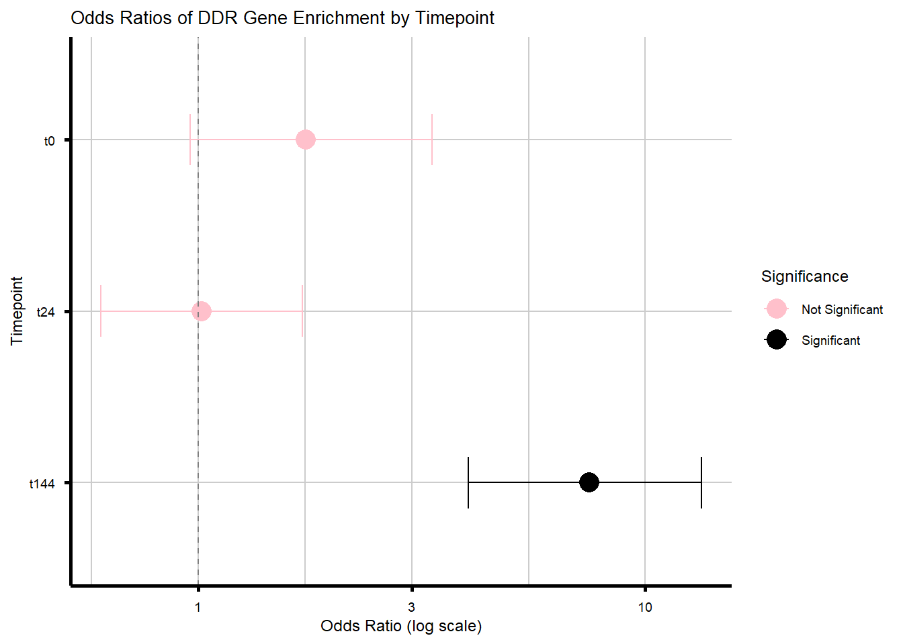

Figure 5 Analysis
Last updated: 2026-04-28
Checks: 6 1
Knit directory: DXR_website/
This reproducible R Markdown analysis was created with workflowr (version 1.7.1). The Checks tab describes the reproducibility checks that were applied when the results were created. The Past versions tab lists the development history.
Great! Since the R Markdown file has been committed to the Git repository, you know the exact version of the code that produced these results.
Great job! The global environment was empty. Objects defined in the global environment can affect the analysis in your R Markdown file in unknown ways. For reproduciblity it’s best to always run the code in an empty environment.
The command set.seed(20251201) was run prior to running
the code in the R Markdown file. Setting a seed ensures that any results
that rely on randomness, e.g. subsampling or permutations, are
reproducible.
Great job! Recording the operating system, R version, and package versions is critical for reproducibility.
Nice! There were no cached chunks for this analysis, so you can be confident that you successfully produced the results during this run.
Using absolute paths to the files within your workflowr project makes it difficult for you and others to run your code on a different machine. Change the absolute path(s) below to the suggested relative path(s) to make your code more reproducible.
| absolute | relative |
|---|---|
| C:/Users/emmap/RDirectory/Recovery_RNAseq/Recovery_5FU/DXR_website | . |
Great! You are using Git for version control. Tracking code development and connecting the code version to the results is critical for reproducibility.
The results in this page were generated with repository version 36d1ff7. See the Past versions tab to see a history of the changes made to the R Markdown and HTML files.
Note that you need to be careful to ensure that all relevant files for
the analysis have been committed to Git prior to generating the results
(you can use wflow_publish or
wflow_git_commit). workflowr only checks the R Markdown
file, but you know if there are other scripts or data files that it
depends on. Below is the status of the Git repository when the results
were generated:
Ignored files:
Ignored: .RData
Ignored: .Rhistory
Ignored: .Rproj.user/
Ignored: DXR_website/.Rhistory
Ignored: DXR_website/.Rproj.user/
Ignored: code/Flow_Purity_Stressor_Boxplots_EMP_250226.R
Ignored: data/CDKN1A_geneplot_Dox.RDS
Ignored: data/Cormotif_dox.RDS
Ignored: data/Cormotif_prob_gene_list.RDS
Ignored: data/Cormotif_prob_gene_list_doxonly.RDS
Ignored: data/Counts_RNA_EMPfortmiller.txt
Ignored: data/DMSO_TNN13_plot.RDS
Ignored: data/DOX_TNN13_plot.RDS
Ignored: data/DOXgeneplots.RDS
Ignored: data/ExpressionMatrix_EMP.csv
Ignored: data/Ind1_DOX_Spearman_plot.RDS
Ignored: data/Ind6REP_Spearman_list.csv
Ignored: data/Ind6REP_Spearman_plot.RDS
Ignored: data/Ind6REP_Spearman_set.csv
Ignored: data/Ind6_Spearman_plot.RDS
Ignored: data/MDM2_geneplot_Dox.RDS
Ignored: data/Master_summary_75-1_EMP_250811_final.csv
Ignored: data/Master_summary_87-1_EMP_250811_final.csv
Ignored: data/Metadata.csv
Ignored: data/Metadata_2_norep_update.RDS
Ignored: data/Metadata_update.csv
Ignored: data/QC/
Ignored: data/Recovery_flow_purity.csv
Ignored: data/SIRT1_geneplot_Dox.RDS
Ignored: data/Sample_annotated.csv
Ignored: data/SpearmanHeatmapMatrix_EMP
Ignored: data/annot_dox.RDS
Ignored: data/annot_list_hm.csv
Ignored: data/cormotif_dxr_1.RDS
Ignored: data/cormotif_dxr_2.RDS
Ignored: data/counts/
Ignored: data/counts_DE_df_dox.RDS
Ignored: data/counts_DE_raw_data.RDS
Ignored: data/counts_raw_filt.RDS
Ignored: data/counts_raw_matrix.RDS
Ignored: data/counts_raw_matrix_EMP_250514.csv
Ignored: data/d24_Spearman_plot.RDS
Ignored: data/dge_calc_dxr.RDS
Ignored: data/dge_calc_matrix.RDS
Ignored: data/ensembl_backup_dox.RDS
Ignored: data/fC_AllCounts.RDS
Ignored: data/fC_DOXCounts.RDS
Ignored: data/featureCounts_Concat_Matrix_DOXSamples_EMP_250430.csv
Ignored: data/featureCounts_DOXdata_updatedind.RDS
Ignored: data/filcpm_colnames_matrix.csv
Ignored: data/filcpm_matrix.csv
Ignored: data/filt_gene_list_dox.RDS
Ignored: data/filter_gene_list_final.RDS
Ignored: data/final_data/
Ignored: data/gene_clustlike_motif.RDS
Ignored: data/gene_postprob_motif.RDS
Ignored: data/genedf_dxr.RDS
Ignored: data/genematrix_dox.RDS
Ignored: data/genematrix_dxr.RDS
Ignored: data/heartgenes.csv
Ignored: data/heartgenes_dox.csv
Ignored: data/image_intensity_stats_all_conditions.csv
Ignored: data/image_level_stats_all_conditions.csv
Ignored: data/image_level_summary_yH2AX_quant.csv
Ignored: data/ind_num_dox.RDS
Ignored: data/ind_num_dxr.RDS
Ignored: data/initial_cormotif.RDS
Ignored: data/initial_cormotif_dox.RDS
Ignored: data/low_nuclei_samples.csv
Ignored: data/low_veh_samples.csv
Ignored: data/new/
Ignored: data/new_cormotif_dox.RDS
Ignored: data/perc_mean_all_10X.png
Ignored: data/perc_mean_all_20X.png
Ignored: data/perc_mean_all_40X.png
Ignored: data/perc_mean_consistent_10X.png
Ignored: data/perc_mean_consistent_20X.png
Ignored: data/perc_mean_consistent_40X.png
Ignored: data/perc_median_all_10X.png
Ignored: data/perc_median_all_20X.png
Ignored: data/perc_median_all_40X.png
Ignored: data/perc_median_consistent_10X.png
Ignored: data/perc_median_consistent_20X.png
Ignored: data/perc_median_consistent_40X.png
Ignored: data/plot_leg_d.RDS
Ignored: data/plot_leg_d_horizontal.RDS
Ignored: data/plot_leg_d_vertical.RDS
Ignored: data/plot_theme_custom.RDS
Ignored: data/process_gene_data_funct.RDS
Ignored: data/raw_mean_all_10X.png
Ignored: data/raw_mean_all_20X.png
Ignored: data/raw_mean_all_40X.png
Ignored: data/raw_mean_consistent_10X.png
Ignored: data/raw_mean_consistent_20X.png
Ignored: data/raw_mean_consistent_40X.png
Ignored: data/raw_median_all_10X.png
Ignored: data/raw_median_all_20X.png
Ignored: data/raw_median_all_40X.png
Ignored: data/raw_median_consistent_10X.png
Ignored: data/raw_median_consistent_20X.png
Ignored: data/raw_median_consistent_40X.png
Ignored: data/ruv/
Ignored: data/summary_all_IF_ROI.RDS
Ignored: data/tableED_GOBP.RDS
Ignored: data/tableESR_GOBP_postprob.RDS
Ignored: data/tableLD_GOBP.RDS
Ignored: data/tableLR_GOBP_postprob.RDS
Ignored: data/tableNR_GOBP.RDS
Ignored: data/tableNR_GOBP_postprob.RDS
Ignored: data/table_incsus_genes_GOBP_RUV.RDS
Ignored: data/table_motif1_GOBP_d.RDS
Ignored: data/table_motif1_genes_GOBP.RDS
Ignored: data/table_motif2_GOBP_d.RDS
Ignored: data/table_motif3_genes_GOBP.RDS
Ignored: data/top.table_V.D144r_dox.RDS
Ignored: data/top.table_V.D24_dox.RDS
Ignored: data/top.table_V.D24r_dox.RDS
Unstaged changes:
Modified: DXR_website/data/Fig7/Table1_Candidate_gene_table_logFC_short_EMP_260312.csv
Modified: DXR_website/data/Fig7/candidate_gene_table_logFC_short.RDS
Note that any generated files, e.g. HTML, png, CSS, etc., are not included in this status report because it is ok for generated content to have uncommitted changes.
These are the previous versions of the repository in which changes were
made to the R Markdown (DXR_website/analysis/Figure5.Rmd)
and HTML (DXR_website/docs/Figure5.html) files. If you’ve
configured a remote Git repository (see ?wflow_git_remote),
click on the hyperlinks in the table below to view the files as they
were in that past version.
| File | Version | Author | Date | Message |
|---|---|---|---|---|
| Rmd | 36d1ff7 | emmapfort | 2026-04-28 | Updated nomenclature for website 04/28/26 EMP |
| Rmd | b728cd1 | emmapfort | 2026-04-27 | update website 04/27/26 EMP |
| Rmd | 4a53e79 | emmapfort | 2026-04-23 | all updated analysis 04/23/26 EMP |
| Rmd | 3455793 | emmapfort | 2026-04-17 | updated analysis 04/16/26 |
| Rmd | f509e9b | emmapfort | 2026-04-15 | update analysis 04/15/26 |
| Rmd | bb1dc97 | emmapfort | 2026-04-14 | updates website 04/14/26 |
| html | f8f35a2 | emmapfort | 2026-04-10 | Build site. |
| Rmd | 7eeafb8 | emmapfort | 2026-04-10 | analysis updates 04/10/26 EMP |
| html | 673be5d | emmapfort | 2026-04-09 | Build site. |
| Rmd | bf83964 | emmapfort | 2026-04-09 | Updated analysis w revisions EMP 04/08/26 |
| Rmd | 56fdfae | emmapfort | 2026-04-07 | updated analysis 04/07/26 EMP |
| html | c93aa31 | emmapfort | 2026-04-02 | Build site. |
| Rmd | 17cca34 | emmapfort | 2026-04-02 | Updated website |
| html | 0544ec2 | emmapfort | 2026-03-31 | Build site. |
| Rmd | 8e70054 | emmapfort | 2026-03-31 | Updated printing for Fig5D EMP |
| html | b40bc0e | emmapfort | 2026-03-31 | Build site. |
| Rmd | 211c6ee | emmapfort | 2026-03-31 | Updated revisions EMP 26/03/30 |
| html | b1b2cef | emmapfort | 2026-03-18 | Build site. |
| Rmd | 34943c6 | emmapfort | 2026-03-18 | Fully updating website with revision information 03/18/26 EMP |
| html | 70c7b4b | emmapfort | 2026-01-06 | Build site. |
| html | c382b38 | emmapfort | 2026-01-06 | Build site. |
| Rmd | cd535e9 | emmapfort | 2026-01-06 | Final Website Touches 01/06/25 EMP |
| html | 7f22593 | emmapfort | 2026-01-05 | Build site. |
| Rmd | 49fa865 | emmapfort | 2026-01-05 | Final Updates to Website EMP 01/05/26 |
| Rmd | da1f69c | emmapfort | 2025-12-02 | updated analysis 12/02/25 |
Libraries
Load necessary libraries for analysis.
library(tidyverse)
library(readxl)
library(readr)
library(ComplexHeatmap)
library(reshape2)
library(circlize)
library(grid)
library(stringr)
library(org.Hs.eg.db)
library(AnnotationDbi)Change my working directory to the correct one
setwd("C:/Users/emmap/RDirectory/Recovery_RNAseq/Recovery_5FU/DXR_website")Define my custom plot theme
# Define the custom theme
# plot_theme_custom <- function() {
# theme_minimal() +
# theme(
# #line for x and y axis
# axis.line = element_line(linewidth = 1,
# color = "black"),
#
# #axis ticks only on x and y, length standard
# axis.ticks.x = element_line(color = "black",
# linewidth = 1),
# axis.ticks.y = element_line(color = "black",
# linewidth = 1),
# axis.ticks.length = unit(0.05, "in"),
#
# #text and font
# axis.text = element_text(color = "black",
# family = "Arial",
# size = 7),
# axis.title = element_text(color = "black",
# family = "Arial",
# size = 9),
# legend.text = element_text(color = "black",
# family = "Arial",
# size = 7),
# legend.title = element_text(color = "black",
# family = "Arial",
# size = 9),
# plot.title = element_text(color = "black",
# family = "Arial",
# size = 10),
#
# #blank background and border
# panel.background = element_blank(),
# panel.border = element_blank(),
#
# #gridlines for alignment
# panel.grid.major = element_line(color = "grey80", linewidth = 0.5), #grey major grid for align in illus
# panel.grid.minor = element_line(color = "grey90", linewidth = 0.5) #grey minor grid for align in illus
# )
# }
# saveRDS(plot_theme_custom, "data/plot_theme_custom.RDS")
# theme_custom <- readRDS("data/plot_theme_custom.RDS")
theme_custom <- readRDS("data/plot_theme_custom_update.RDS")Define a function to save plots as .pdf and .png
save_plot <- function(plot, filename,
folder = ".",
width = 8,
height = 6,
units = "in",
dpi = 300,
add_date = TRUE) {
if (missing(filename)) stop("Please provide a filename (without extension) for the plot.")
date_str <- if (add_date) paste0("_", format(Sys.Date(), "%y%m%d")) else ""
pdf_file <- file.path(folder, paste0(filename, date_str, ".pdf"))
png_file <- file.path(folder, paste0(filename, date_str, ".png"))
ggsave(filename = pdf_file, plot = plot, device = cairo_pdf, width = width, height = height, units = units, bg = "transparent")
ggsave(filename = png_file, plot = plot, device = "png", width = width, height = height, units = units, dpi = dpi, bg = "transparent")
message("Saved plot as Cairo PDF: ", pdf_file)
message("Saved plot as PNG: ", png_file)
}
output_folder <- "C:/Users/emmap/OneDrive/Desktop/DXR Manuscript Materials/Fig pdfs"
#save plot function created
#to use: just define the plot name, filename_base, width, height
#here is a function to save complex heatmaps to pdf and png
save_complex_heatmap <- function(plot, filename, folder, width = 6, height = 8, add_date = TRUE) {
if (!dir.exists(folder)) dir.create(folder, recursive = TRUE)
#add in the date to the end of the filename
#this way I can easily track when each plot was created/saved
date_str <- if (add_date) paste0("_",
format(Sys.Date(),
"%y%m%d")) else ""
#add the date to the filename here
pdf_path <- file.path(folder, paste0(filename, date_str, ".pdf"))
png_path <- file.path(folder, paste0(filename, date_str, ".png"))
#save to a pdf file for illustrator
pdf(pdf_path, width = width, height = height)
draw(plot, heatmap_legend_side = "right")
dev.off()
#now save the png file for easy visualization
png(png_path, width = width, height = height,
units = "in", res = 300)
draw(plot, heatmap_legend_side = "right")
dev.off()
message("Saved heatmap PDF to: ", pdf_path)
message("Saved heatmap PNG: ", png_path)
}
#use this function in the same way as the above for all other plotsRead in Gene Lists from Literature
I utilized gene sets from two additional studies - a p53 target gene set (Fischer, M., Census and evaluation of p53 target genes. Oncogene, 2017. 36(28): p. 3943-3956) and a DNA damage response (DDR) gene set (Liberzon, A., et al., The Molecular Signatures Database (MSigDB) hallmark gene set collection. Cell Syst, 2015. 1(6): p. 417-425).
During the process of revisions, we also added a third gene set - senescence-associated genes (SAG) combined from two papers across three cell types. More information is available at the bottom of this page with their analysis.
#DDR gene set from Liberzon et al.
#read in my DDR gene set
DNA_damage <- readRDS("data/Fig5/DNA_damage_response_genes.RDS")
#pull out only the unique values that are not NA (there aren't any)
ddr_set <- unique(na.omit(DNA_damage))
#pull out the entrez ids
entrezids_DDR_R <- unname(DNA_damage)
#calculate the total length of my gene set for proportion analysis
total_ddr_genes <- length(ddr_set)
cat("Total DNA damage genes:", total_ddr_genes, "\n")Total DNA damage genes: 65 #should be 65 total genes
#p53 target genes from Fischer et al.
p53_target_genes <- readRDS("data/Fig5/p53_target_genes_list.RDS")
#pull out only the unique values that are not NA (there aren't any)
p53_set <- unique(na.omit(p53_target_genes))
#pull out the entrez ids
entrezids_p53 <- unname(p53_set)
#calculate the total length of my gene set for proportion analysis
total_p53_genes <- length(p53_set)
cat("Total p53 Target genes:", total_p53_genes, "\n")Total p53 Target genes: 300 #senescence-associated genes from Distefano et al. & Depianto et al.
senesc_genes <- readRDS("data/Fig5/sag_combined_set.RDS")
#pull out only the unique values (should already be unique)
sag_set <- unique(na.omit(senesc_genes))
#already in entrez id format
total_sen_genes <- length(sag_set)
cat("Total Senescence-Associated genes:", total_sen_genes, "\n")Total Senescence-Associated genes: 2497 Figure 5A - Forest Plot of Odds Ratios
#define my gene clusters
final_genes_1_RUV <- readRDS("data/Fig3/final_genes_1_RUV.RDS")
final_genes_2_RUV <- readRDS("data/Fig3/final_genes_2_RUV.RDS")
clusters <- list(
acute = final_genes_1_RUV,
chronic = final_genes_2_RUV
)
#define the gene sets from above to test with a Fisher's exact test between clusters
gene_sets <- list(
DDR = ddr_set,
P53 = p53_set,
SAG = sag_set
)
#all tested genes as background
all_genes <- readRDS("data/DE/all_genes.RDS")
#compare between motif clusters for acute and chronic
compare_clusters <- function(acute, chronic, gene_set, gene_set_name) {
in_chronic <- sum(chronic %in% gene_set)
out_chronic <- length(chronic) - in_chronic
in_acute <- sum(acute %in% gene_set)
out_acute <- length(acute) - in_acute
mat <- matrix(c(in_chronic, out_chronic, in_acute, out_acute),
nrow = 2, byrow = TRUE)
rownames(mat) <- c("Chronic", "Acute")
colnames(mat) <- c("In_Set", "Not_In_Set")
test <- fisher.test(mat)
tibble(
Gene_Set = gene_set_name,
Cluster_Comparison = "Chronic_vs_Acute",
In_Set_Chronic = in_chronic,
In_Set_Acute = in_acute,
Odds_Ratio = as.numeric(test$estimate),
CI_Low = test$conf.int[1],
CI_High = test$conf.int[2],
P_Value = test$p.value
)
}
#apply for each gene set
comparison_results <- map_dfr(names(gene_sets), function(gs_name) {
compare_clusters(final_genes_1_RUV,
final_genes_2_RUV,
gene_sets[[gs_name]], gs_name)
})
print(comparison_results)# A tibble: 3 × 8
Gene_Set Cluster_Comparison In_Set_Chronic In_Set_Acute Odds_Ratio CI_Low
<chr> <chr> <int> <int> <dbl> <dbl>
1 DDR Chronic_vs_Acute 16 24 10.4 5.13
2 P53 Chronic_vs_Acute 28 170 2.59 1.65
3 SAG Chronic_vs_Acute 324 1084 11.0 9.03
# ℹ 2 more variables: CI_High <dbl>, P_Value <dbl>#add sigificance and percent overlap
comparison_results <- comparison_results %>%
mutate(
Perc_Chronic = round((In_Set_Chronic / length(final_genes_2_RUV)) * 100, 2),
Perc_Acute = round((In_Set_Acute / length(final_genes_1_RUV)) * 100, 2),
Significance = case_when(
P_Value < 0.001 ~ "***",
P_Value < 0.01 ~ "**",
P_Value < 0.05 ~ "*",
TRUE ~ ""
),
Odds_Ratio = round(Odds_Ratio, 3),
CI_Low = round(CI_Low, 3),
CI_High = round(CI_High, 3),
P_Value = signif(P_Value, 3)
)
#create a final summary table
summary_table_5a <- comparison_results %>%
dplyr::select(
Gene_Set,
In_Set_Chronic,
In_Set_Acute,
Odds_Ratio, CI_Low, CI_High,
P_Value, Significance
)
cat("\n--- Chronic vs Acute Enrichment Summary ---\n")
--- Chronic vs Acute Enrichment Summary ---summary_table_5a# A tibble: 3 × 8
Gene_Set In_Set_Chronic In_Set_Acute Odds_Ratio CI_Low CI_High P_Value
<chr> <int> <int> <dbl> <dbl> <dbl> <dbl>
1 DDR 16 24 10.4 5.13 20.6 5.67e- 10
2 P53 28 170 2.59 1.65 3.92 3.32e- 5
3 SAG 324 1084 11.0 9.02 13.4 1.96e-133
# ℹ 1 more variable: Significance <chr>#now create a forest plot
p_comparison <- ggplot(comparison_results,
aes(y = Gene_Set, x = Odds_Ratio,
xmin = CI_Low, xmax = CI_High)) +
geom_point(size = 4) +
geom_errorbarh(height = 0.2, size = 1, color = "black") +
geom_text(aes(label = Significance),
position = position_nudge(y = 0.2),
color = "black", fontface = "bold", size = 5) +
geom_vline(xintercept = 1, linetype = "dashed", color = "grey30") +
# scale_x_log10(limits = c(1, 30),
# breaks = c(1, 10, 20)) +
labs(
x = "odds ratio (95% confidence interval)",
y = NULL,
title = "Enrichment of DDR, p53, and SAG target genes Chronic vs Acute",
) +
theme_custom()
print(p_comparison)
save_plot(p_comparison,
filename = "Fig5A_new_SAG_p53_DDR_forest_CvA_EMP",
folder = output_folder,
height = 2,
width = 3)Figure 5B - log2FC Heatmap DDR tx+144 DEGs
#load in DEGs for all timepoints
DOX_24T_R <- read.csv("data/DE/Toptable_RUV_24T_final.csv") %>%
dplyr::select(-(X))
DOX_24R_R <- read.csv("data/DE/Toptable_RUV_24R_final.csv") %>%
dplyr::select(-(X))
DOX_144R_R <- read.csv("data/DE/Toptable_RUV_144R_final.csv") %>%
dplyr::select(-(X))
#extract Significant DEGs from these lists
DEGs_24T_R <- DOX_24T_R$Entrez_ID[DOX_24T_R$adj.P.Val < 0.05]
DEGs_24R_R <- DOX_24R_R$Entrez_ID[DOX_24R_R$adj.P.Val < 0.05]
DEGs_144R_R <- DOX_144R_R$Entrez_ID[DOX_144R_R$adj.P.Val < 0.05]
#DDR Entrez_ID and categories
entrez_category_DDR <- tribble(
~ENTREZID, ~Category,
317, "Apoptosis", 355, "Apoptosis", 581, "Apoptosis", 637, "Apoptosis",
836, "Apoptosis", 841, "Apoptosis", 842, "Apoptosis", 27113, "Apoptosis",
5366, "Apoptosis", 54205, "Apoptosis", 55367, "Apoptosis", 8795, "Apoptosis",
1026, "Cell Cycle / Checkpoint", 1027, "Cell Cycle / Checkpoint", 595, "Cell Cycle / Checkpoint",
894, "Cell Cycle / Checkpoint", 896, "Cell Cycle / Checkpoint", 898, "Cell Cycle / Checkpoint",
9133, "Cell Cycle / Checkpoint", 9134, "Cell Cycle / Checkpoint", 891, "Cell Cycle / Checkpoint",
983, "Cell Cycle / Checkpoint", 1017, "Cell Cycle / Checkpoint", 1019, "Cell Cycle / Checkpoint",
1020, "Cell Cycle / Checkpoint", 1021, "Cell Cycle / Checkpoint", 993, "Cell Cycle / Checkpoint",
995, "Cell Cycle / Checkpoint", 1869, "Cell Cycle / Checkpoint", 4609, "Cell Cycle / Checkpoint",
5925, "Cell Cycle / Checkpoint", 9874, "Cell Cycle / Checkpoint", 11011, "Cell Cycle / Checkpoint",
1385, "Cell Cycle / Checkpoint",
472, "Damage Sensors / Signal Transducers", 545, "Damage Sensors / Signal Transducers",
5591, "Damage Sensors / Signal Transducers", 5810, "Damage Sensors / Signal Transducers",
5883, "Damage Sensors / Signal Transducers", 5884, "Damage Sensors / Signal Transducers",
6118, "Damage Sensors / Signal Transducers", 4361, "Damage Sensors / Signal Transducers",
10111, "Damage Sensors / Signal Transducers", 4683, "Damage Sensors / Signal Transducers",
84126, "Damage Sensors / Signal Transducers", 3014, "Damage Sensors / Signal Transducers",
672, "DNA Repair", 2177, "DNA Repair", 5888, "DNA Repair", 5893, "DNA Repair",
1647, "DNA Repair", 4616, "DNA Repair", 10912, "DNA Repair", 1111, "DNA Repair",
11200, "DNA Repair", 1643, "DNA Repair", 8243, "DNA Repair", 5981, "DNA Repair",
7157, "p53 Regulators / Targets", 4193, "p53 Regulators / Targets", 5371, "p53 Regulators / Targets",
27244, "p53 Regulators / Targets", 50484, "p53 Regulators / Targets",
207, "Miscellaneous / Broad", 25, "Miscellaneous / Broad"
)
entrez_ids_DDR_R <- entrez_category_DDR$ENTREZID
#function to extract relevant data
extract_data_DDR_RUV <- function(df, name) {
df %>%
filter(Entrez_ID %in% entrez_ids_DDR_R) %>%
mutate(Gene = mapIds(org.Hs.eg.db,
as.character(Entrez_ID),
column = "SYMBOL",
keytype = "ENTREZID",
multiVals = "first"),
Condition = name,
Signif = ifelse(adj.P.Val < 0.05, "*", ""))
}
#DEG list
deg_list_RUV <- list("t0" = DOX_24T_R,
"t24" = DOX_24R_R,
"t144" = DOX_144R_R
)
#combine all DEGs and annotate
all_data_DDR_RUV <- bind_rows(mapply(extract_data_DDR_RUV, deg_list_RUV, names(deg_list_RUV), SIMPLIFY = FALSE))
#now make a filtering step to only include DEGs at tx+144
sig_genes_t144 <- all_data_DDR_RUV %>%
dplyr::filter(Condition == "t144", adj.P.Val < 0.05) %>%
pull(Gene) %>%
unique()
filt_DDR_data_t144 <- all_data_DDR_RUV %>%
dplyr::filter(Gene %in% sig_genes_t144)
#create matrices
logFC_mat_DDR_RUV <- acast(filt_DDR_data_t144, Gene ~ Condition, value.var = "logFC")
signif_mat_DDR_RUV <- acast(filt_DDR_data_t144, Gene ~ Condition, value.var = "Signif")
#desired column order
desired_order <- c("t0",
"t24",
"t144")
logFC_mat_DDR_RUV <- logFC_mat_DDR_RUV[, desired_order]
signif_mat_DDR_RUV <- signif_mat_DDR_RUV[, desired_order]
#column annotation
meta_DDR_RUV <- str_split_fixed(colnames(logFC_mat_DDR_RUV), "_", 2)
timepoint_annot <- colnames(logFC_mat_DDR_RUV)
col_annot_DDR_RUV <- HeatmapAnnotation(
Timepoint = timepoint_annot,
col = list(
Timepoint = c("t0" = "#005A4C",
"t24" = "#328477",
"t144" = "#8FB9B1")
),
annotation_height = unit(c(1, 1, 1), "cm"),
annotation_legend_param = list(
Timepoint = list(
at = c("t0", "t24", "t144")
)
)
)
#draw heatmap
ddr_hm_5b <- Heatmap(logFC_mat_DDR_RUV,
name = "log2FC",
top_annotation = col_annot_DDR_RUV,
cluster_columns = FALSE,
cluster_rows = FALSE,
show_row_names = TRUE,
row_names_gp = gpar(fontsize = 7),
show_column_names = FALSE,
column_names_gp = gpar(fontsize = 7),
rect_gp = gpar(col = "black", lwd = 0.5),
border = gpar(col = "black"),
layer_fun = function(j, i, x, y, width, height, fill) {
grid.text(signif_mat_DDR_RUV[cbind(i, j)], x, y, gp = gpar(fontsize = 12))
},
column_title = "DDR gene response (Liberzon et al.)",
column_title_gp = gpar(fontsize = 9, fontface = "plain"),
heatmap_legend_param = list(
title_gp = gpar(fontsize = 8, fontface = "plain"),
labels_gp = gpar(fontsize = 7, fontface = "plain")
)
)
print(ddr_hm_5b)
#save to PDF in your output folder
# save_complex_heatmap(
# plot = ddr_hm_5b,
# filename = "Fig5B_logFCHM_RUV_DDR_EMP",
# folder = output_folder,
# width = 8,
# height = 7
# )Figure 5C - p53 Target Genes logFC Heatmap
#use DEGs above
#p53 target Entrez_ID
entrez_ids_p53 <- c(1026,50484,4193,9766,9518,7832,1643,1647,1263,57103,51065,8795,51499,64393,581,
5228,5429,8493,55959,7508,64782,282991,355,53836,4814,10769,9050,27244,9540,94241,
26154,57763,900,26999,55332,26263,23479,23612,29950,9618,10346,8824,134147,55294,
22824,4254,6560,467,27113,60492,8444,60401,1969,220965,2232,3976,55191,84284,93129,
5564,7803,83667,7779,132671,7039,51768,137695,93134,7633,10973,340485,307,27350,
23245,3732,29965,1363,1435,196513,8507,8061,2517,51278,53354,54858,23228,5366,5912,
6236,51222,26152,59,1907,50650,91012,780,9249,11072,144455,64787,116151,27165,2876,
57822,55733,57722,121457,375449,85377,4851,5875,127544,29901,84958,8797,8793,441631,
220001,54541,5889,5054,25816,25987,5111,98,317,598,604,10904,1294,80315,53944,
1606,2770,3628,3675,3985,4035,4163,84552,29085,55367,5371,5791,54884,5980,8794,
1462,50808,220,583,694,1056,9076,10978,54677,1612,55040,114907,2274,127707,4000,
8079,4646,4747,27445,5143,80055,79156,5360,5364,23654,5565,5613,5625,10076,56963,
6004,390,255488,6326,6330,23513,7869,283130,204962,83959,6548,6774,9263,10228,
22954,10475,85363,494514,10142,79714,1006,8446,9648,79828,5507,55240,63874,25841,
9289,84883,154810,51321,421,8553,655,119032,84280,10950,824,839,57828,857,8812,
8837,94027,113189,22837,132864,10898,3300,81704,1847,1849,1947,9538,24139,5168,
147965,115548,9873,23768,2632,2817,3280,3265,23308,3490,51477,182,3856,8844,144811,
9404,4043,9848,2872,23041,740,343263,4638,26509,4792,22861,57523,55214,80025,164091,
57060,64065,51090,5453,8496,333926,55671,5900,55544,23179,8601,389,6223,55800,6385,
4088,6643,122809,257397,285343,7011,54790,374618,55362,51754,7157,9537,22906,7205,
80705,219699,55245,83719,7748,25946,118738)
#function to extract relevant data
extract_data_p53_RUV <- function(df, name) {
df %>%
filter(Entrez_ID %in% entrez_ids_p53) %>%
mutate(Gene = mapIds(org.Hs.eg.db,
as.character(Entrez_ID),
column = "SYMBOL",
keytype = "ENTREZID",
multiVals = "first"),
Condition = name,
Signif = ifelse(adj.P.Val < 0.05, "*", ""))
}
#DEG list
deg_list_RUV <- list("t0" = DOX_24T_R,
"t24" = DOX_24R_R,
"t144" = DOX_144R_R
)
#combine all DEGs and annotate
all_data_p53_RUV <- bind_rows(mapply(extract_data_p53_RUV, deg_list_RUV,
names(deg_list_RUV), SIMPLIFY = FALSE))
#now make a filtering step to only include DEGs at tx+144
sig_genes_t144 <- all_data_p53_RUV %>%
dplyr::filter(Condition == "t144", adj.P.Val < 0.05) %>%
pull(Gene) %>%
unique()
filt_p53_data_t144 <- all_data_p53_RUV %>%
dplyr::filter(Gene %in% sig_genes_t144)
#create matrices
logFC_mat53_RUV <- acast(filt_p53_data_t144, Gene ~ Condition, value.var = "logFC")
signif_mat53_RUV <- acast(filt_p53_data_t144, Gene ~ Condition, value.var = "Signif")
#desired column order
desired_order <- c("t0",
"t24",
"t144")
logFC_mat_p53_RUV <- logFC_mat53_RUV[, desired_order]
signif_mat_p53_RUV <- signif_mat53_RUV[, desired_order]
#column annotation
timepoint_annot <- colnames(logFC_mat_p53_RUV)
col_annot_p53_RUV <- HeatmapAnnotation(
Timepoint = timepoint_annot,
col = list(
Timepoint = c("t0" = "#005A4C",
"t24" = "#328477",
"t144" = "#8FB9B1")
),
annotation_height = unit(c(1, 1, 1), "cm"),
annotation_legend_param = list(
Timepoint = list(
at = c("t0", "t24", "t144")
)
)
)
#draw heatmap
p53_hm_5c <- Heatmap(
logFC_mat_p53_RUV,
name = "log2FC",
top_annotation = col_annot_p53_RUV,
cluster_columns = FALSE,
cluster_rows = TRUE,
show_row_names = TRUE,
row_names_gp = gpar(fontsize = 7),
show_column_names = FALSE,
column_names_gp = gpar(fontsize = 7),
rect_gp = gpar(col = "black", lwd = 0.5),
border = "black",
layer_fun = function(j, i, x, y, width, height, fill) {
grid.text(signif_mat_p53_RUV[cbind(i, j)], x, y, gp = gpar(fontsize = 12))
},
column_title = "p53 gene response (Fischer et al.)",
column_title_gp = gpar(fontsize = 9, fontface = "plain"),
heatmap_legend_param = list(
title_gp = gpar(fontsize = 8, fontface = "plain"),
labels_gp = gpar(fontsize = 7)
)
)
print(p53_hm_5c)
log2FC Heatmap SAG (Fibro) tx+144 DEGs
#load in DEGs for all timepoints
DOX_24T_R <- read.csv("data/DE/Toptable_RUV_24T_final.csv") %>%
dplyr::select(-(X))
DOX_24R_R <- read.csv("data/DE/Toptable_RUV_24R_final.csv") %>%
dplyr::select(-(X))
DOX_144R_R <- read.csv("data/DE/Toptable_RUV_144R_final.csv") %>%
dplyr::select(-(X))
#extract Significant DEGs from these lists
DEGs_24T_R <- DOX_24T_R$Entrez_ID[DOX_24T_R$adj.P.Val < 0.05]
DEGs_24R_R <- DOX_24R_R$Entrez_ID[DOX_24R_R$adj.P.Val < 0.05]
DEGs_144R_R <- DOX_144R_R$Entrez_ID[DOX_144R_R$adj.P.Val < 0.05]
Lung_Epi_entrez <- readRDS("data/Fig5/Lung_epi_SAGs_entrezid.RDS")
Fibro_entrez <- readRDS("data/Fig5/Lung_fibro_SAGs_entrezid.RDS")
HCA2_entrez <- readRDS("data/Fig5/HCA2_entrez.RDS")
entrez_fibro <- Fibro_entrez
#function to extract relevant data
extract_data_fibro_RUV <- function(df, name) {
df %>%
filter(Entrez_ID %in% entrez_fibro) %>%
mutate(Gene = mapIds(org.Hs.eg.db,
as.character(Entrez_ID),
column = "SYMBOL",
keytype = "ENTREZID",
multiVals = "first"),
Condition = name,
Signif = ifelse(adj.P.Val < 0.05, "*", ""))
}
#DEG list
deg_list_RUV <- list("t0" = DOX_24T_R,
"t24" = DOX_24R_R,
"t144" = DOX_144R_R
)
#combine all DEGs and annotate
all_data_fibro_RUV <- bind_rows(mapply(extract_data_fibro_RUV, deg_list_RUV,
names(deg_list_RUV), SIMPLIFY = FALSE))
#now make a filtering step to only include DEGs at tx+144
sig_genes_t144 <- all_data_fibro_RUV %>%
dplyr::filter(Condition == "t144", adj.P.Val < 0.05) %>%
pull(Gene) %>%
unique()
filt_fibro_data_t144 <- all_data_fibro_RUV %>%
dplyr::filter(Gene %in% sig_genes_t144)
#create matrices
logFC_fibro_RUV <- acast(filt_fibro_data_t144, Gene ~ Condition,
value.var = "logFC")
signif_fibro_RUV <- acast(filt_fibro_data_t144, Gene ~ Condition,
value.var = "Signif")
#desired column order
desired_order <- c("t0",
"t24",
"t144")
logFC_mat_fibro_RUV <- logFC_fibro_RUV[, desired_order]
signif_mat_fibro_RUV <- signif_fibro_RUV[, desired_order]
#column annotation
timepoint_annot_fibro <- colnames(logFC_mat_fibro_RUV)
col_annot_fibro_RUV <- HeatmapAnnotation(
Timepoint = timepoint_annot_fibro,
col = list(
Timepoint = c(
"t0" = "#005A4C",
"t24" = "#328477",
"t144" = "#8FB9B1")
),
annotation_height = unit(c(1, 1, 1), "cm"),
annotation_legend_param = list(
Timepoint = list(
at = c("t0", "t24", "t144")
)
)
)
#draw heatmap
sag_fibro_5d <- Heatmap(
logFC_mat_fibro_RUV,
name = "log2FC",
top_annotation = col_annot_fibro_RUV,
cluster_columns = FALSE,
cluster_rows = TRUE,
show_row_names = TRUE,
row_names_gp = gpar(fontsize = 7),
show_column_names = FALSE,
column_names_gp = gpar(fontsize = 7),
rect_gp = gpar(col = "black", lwd = 0.5),
border = "black",
layer_fun = function(j, i, x, y, width, height, fill) {
grid.text(signif_mat_fibro_RUV[cbind(i, j)], x, y, gp = gpar(fontsize = 12))
},
column_title = "SAG gene response (Fibro) (Distefano et al.)",
column_title_gp = gpar(fontsize = 9, fontface = "plain"),
heatmap_legend_param = list(
title_gp = gpar(fontsize = 8, fontface = "plain"),
labels_gp = gpar(fontsize = 7)
)
)
print(sag_fibro_5d)
#save to PDF in your output folder
# save_complex_heatmap(
# plot = sag_hm_5d,
# filename = "Fig5D_logFCHM_EpiFibroCombinedSet_RUV_SAG_EMP_260416.pdf",
# folder = output_folder,
# width = 8,
# height = 7
# )log2FC Heatmap SAG (Epi) tx+144 DEGs
#load in DEGs for all timepoints
DOX_24T_R <- read.csv("data/DE/Toptable_RUV_24T_final.csv") %>%
dplyr::select(-(X))
DOX_24R_R <- read.csv("data/DE/Toptable_RUV_24R_final.csv") %>%
dplyr::select(-(X))
DOX_144R_R <- read.csv("data/DE/Toptable_RUV_144R_final.csv") %>%
dplyr::select(-(X))
#extract Significant DEGs from these lists
DEGs_24T_R <- DOX_24T_R$Entrez_ID[DOX_24T_R$adj.P.Val < 0.05]
DEGs_24R_R <- DOX_24R_R$Entrez_ID[DOX_24R_R$adj.P.Val < 0.05]
DEGs_144R_R <- DOX_144R_R$Entrez_ID[DOX_144R_R$adj.P.Val < 0.05]
Lung_Epi_entrez <- readRDS("data/Fig5/Lung_epi_SAGs_entrezid.RDS")
Fibro_entrez <- readRDS("data/Fig5/Lung_fibro_SAGs_entrezid.RDS")
HCA2_entrez <- readRDS("data/Fig5/HCA2_entrez.RDS")
#start with the epi set from distefano et al.
entrez_epi <- Lung_Epi_entrez
#function to extract relevant data
extract_data_epi_RUV <- function(df, name) {
df %>%
filter(Entrez_ID %in% entrez_epi) %>%
mutate(Gene = mapIds(org.Hs.eg.db,
as.character(Entrez_ID),
column = "SYMBOL",
keytype = "ENTREZID",
multiVals = "first"),
Condition = name,
Signif = ifelse(adj.P.Val < 0.05, "*", ""))
}
#DEG list
deg_list_RUV <- list("t0" = DOX_24T_R,
"t24" = DOX_24R_R,
"t144" = DOX_144R_R
)
#combine all DEGs and annotate
all_data_epi_RUV <- bind_rows(mapply(extract_data_epi_RUV, deg_list_RUV,
names(deg_list_RUV), SIMPLIFY = FALSE))
#now make a filtering step to only include DEGs at tx+144
sig_genes_t144 <- all_data_epi_RUV %>%
dplyr::filter(Condition == "t144", adj.P.Val < 0.05) %>%
pull(Gene) %>%
unique()
filt_epi_data_t144 <- all_data_epi_RUV %>%
dplyr::filter(Gene %in% sig_genes_t144)
#create matrices
logFC_epi_RUV <- acast(filt_epi_data_t144, Gene ~ Condition,
value.var = "logFC")
signif_epi_RUV <- acast(filt_epi_data_t144, Gene ~ Condition,
value.var = "Signif")
#desired column order
desired_order <- c("t0",
"t24",
"t144")
logFC_mat_epi_RUV <- logFC_epi_RUV[, desired_order]
signif_mat_epi_RUV <- signif_epi_RUV[, desired_order]
#column annotation
timepoint_annot_epi <- colnames(logFC_mat_epi_RUV)
col_annot_epi_RUV <- HeatmapAnnotation(
Timepoint = timepoint_annot_epi,
col = list(
Timepoint = c(
"t0" = "#005A4C",
"t24" = "#328477",
"t144" = "#8FB9B1")
),
annotation_height = unit(c(1, 1, 1), "cm"),
annotation_legend_param = list(
Timepoint = list(
at = c("t0", "t24", "t144")
)
)
)
#draw heatmap
sag_epi_5d <- Heatmap(
logFC_mat_epi_RUV,
name = "log2FC",
top_annotation = col_annot_epi_RUV,
cluster_columns = FALSE,
cluster_rows = TRUE,
show_row_names = TRUE,
row_names_gp = gpar(fontsize = 7),
show_column_names = FALSE,
column_names_gp = gpar(fontsize = 7),
rect_gp = gpar(col = "black", lwd = 0.5),
border = "black",
layer_fun = function(j, i, x, y, width, height, fill) {
grid.text(signif_mat_epi_RUV[cbind(i, j)], x, y, gp = gpar(fontsize = 12))
},
column_title = "SAG response (Epi) (Distefano et al.)",
column_title_gp = gpar(fontsize = 9, fontface = "plain"),
heatmap_legend_param = list(
title_gp = gpar(fontsize = 8, fontface = "plain"),
labels_gp = gpar(fontsize = 7)
)
)
print(sag_epi_5d)
#save to PDF in your output folder
# save_complex_heatmap(
# plot = sag_hm_5d,
# filename = "Fig5D_logFCHM_EpiFibroCombinedSet_RUV_SAG_EMP_260416.pdf",
# folder = output_folder,
# width = 8,
# height = 7
# )Figure 5D - log2FC Heatmap SAG response Epi + Fibro sets
#pull in the same dataframes from above used in the non-combined plots
#in order to ensure that all genes are included and unique, add a temporary tag to the end of the gene name
#this will be removed later to plot the normal gene name (SYMBOL)
rownames(logFC_mat_epi_RUV) <- paste0(rownames(logFC_mat_epi_RUV), "_Epi")
rownames(logFC_mat_fibro_RUV) <- paste0(rownames(logFC_mat_fibro_RUV), "_Fibro")
#put the matrices together
logFC_mat_combined <- rbind(logFC_mat_epi_RUV, logFC_mat_fibro_RUV)
signif_mat_combined <- rbind(signif_mat_epi_RUV, signif_mat_fibro_RUV)
#make clean gene name labels
#create a display name vector that removes the _Epi and _Fibro tags for gene names
display_names <- gsub("_Epi|_Fibro", "", rownames(logFC_mat_combined))
#make an annotation dataframe
row_annot_df <- data.frame(
Category = c(rep("Epi", nrow(logFC_mat_epi_RUV)),
rep("Fibro", nrow(logFC_mat_fibro_RUV)))
)
rownames(row_annot_df) <- rownames(logFC_mat_combined)
#create an index to sort the samples by to have Epi on top and Fibro on the bottom
sort_idx <- order(factor(row_annot_df$Category, levels = c("Epi", "Fibro")))
#now reorder my dataframes with this in mind
logFC_mat_combined_sorted <- logFC_mat_combined[sort_idx, ]
signif_mat_combined_sorted <- signif_mat_combined[sort_idx, ]
display_names_sorted <- display_names[sort_idx]
row_annot_df_sorted <- row_annot_df[sort_idx, , drop = FALSE]
row_annot_df_sorted$Category <- factor(row_annot_df_sorted$Category,
levels = c("Epi", "Fibro"))
#make the heatmap with your parameters
col_fun = colorRamp2(c(-6, 0, 6), c("blue", "white", "red"))
#the original scale for Epi was 6 to -6 and Fibro 3 to -3, go to the larger scale
sag_combined_hm_unsort <- Heatmap(
logFC_mat_combined,
name = "log2FC",
col = col_fun,
top_annotation = col_annot_epi_RUV,
row_labels = display_names, #use normal gene names without duplicate info
right_annotation = rowAnnotation(
Category = row_annot_df$Category,
col = list(Category = c("Epi" = "#4CAF65", "Fibro" = "#FE4FE6")),
show_legend = TRUE
),
cluster_columns = FALSE,
cluster_rows = TRUE,
show_row_names = TRUE,
row_names_gp = gpar(fontsize = 7),
layer_fun = function(j, i, x, y, width, height, fill) {
grid.text(ifelse(signif_mat_combined[cbind(i, j)] == "*", "*", ""),
x, y, gp = gpar(fontsize = 12))
}
)
print(sag_combined_hm_unsort)
sag_combined_hm_sort <- Heatmap(
logFC_mat_combined,
name = "log2FC",
col = col_fun,
top_annotation = col_annot_epi_RUV,
row_labels = display_names,
#keep the clustering for the dendrogram, but split this in two categories
row_split = row_annot_df$Category,
cluster_rows = TRUE,
#optionally add a gap, set to 0 if no gap
row_gap = unit(0, "mm"),
#annotation on the right side for category
right_annotation = rowAnnotation(
Category = row_annot_df$Category,
col = list(Category = c("Epi" = "#4CAF65", "Fibro" = "#FE4FE6")),
show_legend = TRUE
),
cluster_columns = FALSE,
show_row_names = TRUE,
row_names_gp = gpar(fontsize = 7),
layer_fun = function(j, i, x, y, width, height, fill) {
grid.text(ifelse(signif_mat_combined[cbind(i, j)] == "*", "*", ""),
x, y, gp = gpar(fontsize = 12))
}
)
print(sag_combined_hm_sort)
#now save both of these plots as pdfs
# save_complex_heatmap(
# plot = sag_combined_hm_unsort,
# filename = "Fig5D_logFCHM_RUV_SAG_EpiFibro_unsort_EMP.pdf",
# folder = output_folder,
# width = 8,
# height = 7
# )
#
# save_complex_heatmap(
# plot = sag_combined_hm_sort,
# filename = "Fig5D_logFCHM_RUV_SAG_EpiFibro_sort_EMP.pdf",
# folder = output_folder,
# width = 8,
# height = 7
# )Figure S11a - DDR target gene enrichment in DEGs vs nonDEGs
#DEGs list
timepoint_DEGs_ddr <- list(
"t0" = DEGs_24T_R,
"t24" = DEGs_24R_R,
"t144" = DEGs_144R_R
)
#calculate proportions, odds ratios, and Fisher's test results per timepoint
proportion_data_ddr <- purrr::map_dfr(names(timepoint_DEGs_ddr), function(tp_ddr) {
degs_ddr <- unique(timepoint_DEGs_ddr[[tp_ddr]])
nondegs_ddr <- setdiff(all_genes, degs_ddr)
in_deg_ddr <- sum(degs_ddr %in% ddr_set)
in_deg_nonddr <- length(degs_ddr) - in_deg_ddr
in_nondeg_ddr <- sum(nondegs_ddr %in% ddr_set)
in_nondeg_nonddr <- length(nondegs_ddr) - in_nondeg_ddr
contingency_degs_ddr <- matrix(c(in_deg_ddr, in_deg_nonddr,
in_nondeg_ddr, in_nondeg_nonddr),
nrow = 2, byrow = TRUE)
fisher_res_ddr <- fisher.test(contingency_degs_ddr)
p_val_ddr <- fisher_res_ddr$p.value
odds_ratio_ddr <- unname(fisher_res_ddr$estimate)
ci_low_ddr <- fisher_res_ddr$conf.int[1]
ci_high_ddr <- fisher_res_ddr$conf.int[2]
tibble(
Timepoint = tp_ddr,
Odds_Ratio = odds_ratio_ddr,
CI_low = ci_low_ddr,
CI_high = ci_high_ddr,
P_Value = p_val_ddr,
Significant = p_val_ddr < 0.05
)
})
# Format Timepoint factor and add significance label/color
proportion_data_ddr <- proportion_data_ddr %>%
mutate(
Timepoint = factor(Timepoint, levels = c("t0", "t24", "t144")),
Sig_Label = ifelse(Significant, "Significant", "Not Significant")
)
#plot horizontal forest plot
supp8_forest_ddr_A <- ggplot(proportion_data_ddr, aes(y = Timepoint, x = Odds_Ratio, color = Sig_Label)) +
geom_point(size = 5) +
geom_errorbarh(aes(xmin = CI_low, xmax = CI_high), height = 0.3) +
geom_vline(xintercept = 1, linetype = "dashed", color = "gray50") +
scale_color_manual(values = c("Significant" = "black", "Not Significant" = "pink")) +
scale_x_log10() +
labs(
title = "Odds Ratios of DDR Gene Enrichment by Timepoint",
y = "Timepoint",
x = "Odds Ratio (log scale)",
color = "Significance"
) +
scale_y_discrete(limits = rev(levels(proportion_data_ddr$Timepoint)))+
theme_custom()
print(supp8_forest_ddr_A)
# save_plot(
# plot = supp8_forest_ddr_A,
# filename = "Supp8_ForestDDR_EMP",
# folder = output_folder,
# height = 4,
# width = 6)Figure S11b - p53 target gene enrichment in DEGs vs nonDEGs
timepoint_DEGs_p53 <- list(
"t0" = DEGs_24T_R,
"t24" = DEGs_24R_R,
"t144" = DEGs_144R_R
)
proportion_data_p53 <- purrr::map_dfr(names(timepoint_DEGs_p53), function(tp_p53) {
degs_p53 <- unique(timepoint_DEGs_p53[[tp_p53]])
nondegs_p53 <- setdiff(all_genes, degs_p53)
in_deg_p53 <- sum(degs_p53 %in% p53_set)
in_deg_nonp53 <- length(degs_p53) - in_deg_p53
in_nondeg_p53 <- sum(nondegs_p53 %in% p53_set)
in_nondeg_nonp53 <- length(nondegs_p53) - in_nondeg_p53
contingency_degs_p53 <- matrix(c(in_deg_p53, in_deg_nonp53,
in_nondeg_p53, in_nondeg_nonp53),
nrow = 2, byrow = TRUE)
fisher_res_p53 <- fisher.test(contingency_degs_p53)
p_val_p53 <- fisher_res_p53$p.value
odds_ratio_p53 <- unname(fisher_res_p53$estimate)
ci_low_p53 <- fisher_res_p53$conf.int[1]
ci_high_p53 <- fisher_res_p53$conf.int[2]
tibble(
Timepoint = tp_p53,
Odds_Ratio = odds_ratio_p53,
CI_low = ci_low_p53,
CI_high = ci_high_p53,
P_Value = p_val_p53,
Significant = p_val_p53 < 0.01
)
})
# Format Timepoint factor and add significance label/color
proportion_data_p53 <- proportion_data_p53 %>%
mutate(
Timepoint = factor(Timepoint, levels = c("t0", "t24", "t144")),
Sig_Label = ifelse(Significant, "Significant", "Not Significant")
)
#plot horizontal forest plot with color by significance
supp8_forest_p53_B <- ggplot(proportion_data_p53, aes(y = Timepoint, x = Odds_Ratio, color = Sig_Label)) +
geom_point(size = 5) +
geom_errorbarh(aes(xmin = CI_low, xmax = CI_high), height = 0.3) +
geom_vline(xintercept = 1, linetype = "dashed", color = "gray50") +
scale_color_manual(values = c("Significant" = "black", "Not Significant" = "pink")) +
scale_x_log10() +
labs(
title = "Odds Ratios of p53 Gene Enrichment by Timepoint",
y = "Timepoint",
x = "Odds Ratio (log scale)",
color = "Significance"
) +
scale_y_discrete(limits = rev(levels(proportion_data_p53$Timepoint)))+
theme_custom()
print(supp8_forest_p53_B)
# save_plot(
# plot = supp8_forest_p53_B,
# filename = "Supp8B_Forestp53_EMP",
# folder = output_folder,
# height = 4,
# width = 6)Cell type comparisons of senescense-associated genes
We obtained three gene sets for this comparison from various proliferating cell types to compare with our non-proliferating cells.
Set 1: Distefano, R., Ilieva, M., Madsen, J. H., Rennie, S., & Uchida, S. (2023). DoxoDB: A Database for the Expression Analysis of Doxorubicin-Induced lncRNA Genes. Non-Coding RNA, 9(4), 39. https://doi.org/10.3390/ncrna9040039 (Tables S7 + S8)
Sets 2 & 3: DePianto DJ, Heiden JAV, Morshead KB, Sun KH, Modrusan Z, Teng G, Wolters PJ, Arron JR. Molecular mapping of interstitial lung disease reveals a phenotypically distinct senescent basal epithelial cell population. JCI Insight. 2021 Apr 22;6(8):e143626. doi: 10.1172/jci.insight.143626. PMID: 33705361; PMCID: PMC8119199. (Tables S1 + S2)
#read in your genes
filcpm_mat_genes <- readRDS("data/QC/filcpm_matrix_genes.RDS")
all_symb_genes <- filcpm_mat_genes$SYMBOL
#read in the ids for the first gene set + combine for all HCA2 cells
#(regardless of PDL1 status)
# distefano_s7_ids <- read_excel("C:/Users/emmap/OneDrive/Desktop/DXR Manuscript Materials/Gene Tables/TableS7_Distefano_2023_SenescenceGenes.xlsx",
# range = "A3:F3142")
distefano_s7_ids <- readRDS("data/Fig5/distefano_s7_ids_sags.RDS")
# distefano_s8_ids <- read_excel("C:/Users/emmap/OneDrive/Desktop/DXR Manuscript Materials/Gene Tables/TableS8_Distefano_2023_SenescenceGenes.xlsx",
# range = "A3:F2910")
distefano_s8_ids <- readRDS("data/Fig5/distefano_s8_ids_sags.RDS")
#check how many of these genes for TableS7 + S8 are expressed in our dataset
cat("distefano_s7_ids:", sum(distefano_s7_ids$Gene_symbol %in% all_symb_genes), "of", length(distefano_s7_ids$Gene_symbol), "\n")distefano_s7_ids: 2082 of 3139 #2,082 of 3,139 are expressed in my dataset
cat("distefano_s8_ids:", sum(distefano_s8_ids$Gene_symbol %in% all_symb_genes), "of", length(distefano_s8_ids$Gene_symbol), "\n")distefano_s8_ids: 2053 of 2907 #2,053 of 2,907 are expressed in my dataset
# depianto_s1_ids <- c(
# "ABCA1", "CLDN4", "FANK1", "IL1RN", "MYLK", "REEP", "SP6", "TRAF3IP3",
# "ACKR3", "COL5A1", "FAT2", "IL32", "NAGK", "RHBDL2", "SPRR1A", "TREM2",
# "ACSF2", "CPA4", "FBN1", "IL33", "NCCRP1", "RHCG", "SPRR1B", "TRIM16",
# "ADAMTS7", "CPPED1", "FER1L4", "IL36G", "NDST1", "RHOV", "SPRR2A", "TUBA1A",
# "ADAMTSL4", "CRABP2", "FGF11", "IRF6", "NRCAM", "RNF212B", "SRPX2", "TUBB2A",
# "AIM1L", "CRYAB", "FHDC1", "IVL", "NTN1", "RRAD", "SSC4D", "UCP2",
# "ALOX15B", "CST6", "FLG", "KIAA0922", "NYNRIN", "S100A4", "STARD5", "ULBP2",
# "ANGPTL4", "CTNNBIP1", "FLG-AS1", "KLRC4", "OTUB2", "S100A8", "STC1", "UPK3B",
# "ANKRD22", "CUX2", "FRMD8", "KLRK1", "OVOL1", "S100A9", "SUGCT", "VGLL3",
# "ANXA4", "CXCL1", "GALNT5", "KRT13", "PAM", "SAA1", "SYNPO", "WDR63",
# "ARHGEF4", "CXCL17", "GAS6-AS1", "KRT16", "PAMR1", "SCD5", "SYTL4", "XG",
# "ATL1", "CYB5R1", "GBP3", "KRT23", "PAPLN", "SCN4B", "TACSTD2", "ZNF185",
# "B4GALNT4", "DAPK1", "GCNT4", "KRT6A", "PAQR7", "SEC14L2", "TAGLN", "ZNF429",
# "C1orf74", "DHRS1", "GGT1", "KRT6B", "PCBP4", "SEPT5-GP1BB", "TCEA2", "ZNF488",
# "C1QTNF1", "DHRS12", "GJB4", "LAYN", "PDE9A", "SERPINB13", "TENM2", "ZNF702P",
# "C1QTNF6", "DIXDC1", "GPX3", "LDLRAD2", "PDLIM1", "SERPINB3", "THSD4", "ZNF704",
# "C3", "DKK3", "GRHL3", "LOC100862671", "PGBD5", "SERPINB7", "TLL2", "ZNF750",
# "CALML3", "DOCK8", "HEG1", "LOC101928100", "PIK3IP1", "SERPINB9", "TMBIM1",
# "CALML3-AS1", "DPYSL4", "HEPHL1", "LOC101928281", "PLA2G4F", "SH3BGRL",
# "TMEM132A", "CAPN3", "DTNA", "HES2", "LOC101930241", "PLK2", "SH3TC2",
# "TMEM217", "CCND1", "DUOXA1", "HIST1H1C", "LOC103021296", "PLOD2", "SLC15A3",
# "TMEM229B", "CCND2", "ECM1", "HIST1H2AC", "LRP1", "PORCN", "SLC16A2", "TMEM40",
# "CCRN4L", "EDN1", "HIST1H2BD", "LY6D", "PPP2R2C", "SLC1A1", "TMEM63C", "CD24",
# "EHD3", "HIST1H2BK", "LYPD3", "PROM2", "SLC31A2", "TMEM79",
# "CD82", "ELFN2", "HIST2H2BE", "MAGED1", "PRR5L", "SLC39A11", "TMPRSS13",
# "CEACAM6", "ENC1", "HSPG2", "MATN2", "PRSS22", "SLC44A2", "TMPRSS4",
# "CHST2", "ENTPD3", "ID3", "MFI2", "PRSS23", "SLC46A3", "TNFSF10",
# "CKB", "EPHA4", "IGFBP2", "MMP28", "PTGES", "SLC6A11", "TOM1L2",
# "CLCA2", "EPHB3", "IKZF2", "MXRA5", "RAB7B", "SLC9A3", "TP53I3",
# "CLDN1", "ESPN", "IL12RB2", "MYH14", "REC", "SNCG", "TPM1"
# )
depianto_s1_ids <- readRDS("data/Fig5/depianto_s1_ids_sags.RDS")
# depianto_s2_ids <- depianto_s2_ids <- c(
# "ABCA3", "CYB5D2", "LYNX1", "RRM2B",
# "ABCA7", "DHRS3", "MANSC1", "SCG50",
# "ABCA8", "DPP4", "MGARP", "SECTM1",
# "AC007388.1", "DRAM1", "MGP", "SERPING1",
# "ACSS3", "DYNC2LI1", "MGST2", "SLC1A1",
# "ADAMTS5", "FAM162A", "MORN4", "SLC40A1",
# "ADGRL1", "FAM198B", "MXI1", "SOD2",
# "AMPD3", "FAM43A", "NALCN", "SPATA18",
# "AMZ2P1", "FAXDC2", "NCOA7", "ST3GAL5",
# "ANK2", "FBXO32", "NEAT1", "SULF1",
# "AP001972.5", "FER1L4", "NTN4", "SULF2",
# "ARHGEF37", "FIBIN", "ORAI3", "SVEP1",
# "ARRB1", "GFRA1", "PAPPA", "TCEA2",
# "BAMBI", "GPR155", "PCMTD1", "TLCD2",
# "BMP4", "GPRC5B", "PCSK5", "TM7SF2",
# "BTG2", "HIST1H1C", "PDGFD", "TMEM170B",
# "C1QTNF1", "HIST1H2AC", "PIK3IP1", "TMEM176B",
# "C1S", "HIST1H2BD", "PLD1", "TMEM178B",
# "C3", "HIST1H3E", "PLXNC1", "TP53INP1",
# "CAMK1D", "HIST1H4H", "PODN", "TXNIP",
# "CBLN3", "HIST1H4I", "PPP1R3C", "VSIR",
# "CCND2", "HNMT", "PRRG1", "WDR63",
# "CCPG1", "IFI6", "PTCHD4", "WFDC21P",
# "COL4A5", "IGDCC4", "QPRT", "YPEL2",
# "CPE", "JAM2", "RARRES2", "ZMAT3",
# "CPZ", "JMY", "RDH10", "ZNF219",
# "CREBRF", "KCNJ2", "RGCC", "ZNF667",
# "CRELD1", "KLHL24", "RHBDL1",
# "CTSF", "LACC1", "RILP",
# "CTSO", "LRRK2", "RPS6KA2"
# )
depianto_s2_ids <- readRDS("data/Fig5/depianto_s2_ids_sags.RDS")
#check overlap with my all_genes excluding lowly-expressed genes
cat("depianto_s1_ids:", sum(depianto_s1_ids %in% all_symb_genes), "of", length(depianto_s1_ids), "\n")depianto_s1_ids: 148 of 227 cat("depianto_s2_ids:", sum(depianto_s2_ids %in% all_symb_genes), "of", length(depianto_s2_ids), "\n")depianto_s2_ids: 101 of 117 #now translate these genes into Entrez_ID so I can make accurate comparisons
to_entrez <- function(symbols, annotation_df) {
annotation_df %>%
dplyr::filter(SYMBOL %in% symbols) %>%
dplyr::pull(Entrez_ID) %>%
as.character() %>%
unique() %>%
na.omit()
}
# PDL1pos_HCA2_entrez <- to_entrez(distefano_s7_ids$Gene_symbol,
# filcpm_mat_genes)
PDL1pos_entrez <- readRDS("data/Fig5/PDL1pos_HCA2_SAGs_entrezid.RDS") #S7
# PDL1neg_HCA2_entrPDL1neg_HCA2_entrez <- to_entrez(distefano_s8_ids$Gene_symbol,
# filcpm_mat_genes)
PDL1neg_entrez <- readRDS("data/Fig5/PDL1neg_HCA2_SAGs_entrezid.RDS") #S8
#now combine PDL1 pos and neg since I don't care about their PDL1 status
# HCA2_entrez <- c(PDL1pos_entrez, PDL1neg_entrez)
#this has 4,135 genes which combined both expressed sets in my data
#genes not expressed in my data not included
#now I want to ensure that the set is unique with no genes being double-counted
# HCA2_entrez <- unique(na.omit(HCA2_entrez))
# length(HCA2_entrez)
#total length of unique genes = 2,372 genes
#save + read back in so I can only use the fully unique set
HCA2_entrez <- readRDS("data/Fig5/HCA2_entrez.RDS")
# Lung_Epi_entrez <- to_entrez(depianto_s1_ids, filcpm_mat_genes)
Lung_Epi_entrez <- readRDS("data/Fig5/Lung_epi_SAGs_entrezid.RDS")
# Fibro_entrez <- to_entrez(depianto_s2_ids, filcpm_mat_genes)
Fibro_entrez <- readRDS("data/Fig5/Lung_fibro_SAGs_entrezid.RDS")
cat("HCA2 cells:", length(HCA2_entrez), "of", length(unique(distefano_s7_ids$Gene_symbol, distefano_s8_ids$Gene_symbol)), "expressed \n")HCA2 cells: 2372 of 3139 expressed cat("Lung epithelial cells:", length(Lung_Epi_entrez), "of", length(depianto_s1_ids), "expressed \n")Lung epithelial cells: 148 of 227 expressed cat("Lung fibroblasts:", length(Fibro_entrez), "of", length(depianto_s2_ids), "expressed \n")Lung fibroblasts: 101 of 117 expressed Forest Plot of Senescence-Associated Genes in Chronic vs Acute
#read in my gene sets made above
acute_set <- unique(na.omit(final_genes_1_RUV))
chronic_set <- unique(na.omit(final_genes_2_RUV))
SAG_sets <- list(
HCA2 = HCA2_entrez,
Epi = Lung_Epi_entrez,
Fibro = Fibro_entrez
)
celltype_order <- c("HCA2", "Epi", "Fibro")
#perform a fisher's exact test on these data
fisher_test_overlap <- function(acute, chronic, clust) {
#ensure this is chronic vs acute
c1 <- sum(chronic %in% clust)
c2 <- length(chronic) - c1
a1 <- sum(acute %in% clust)
a2 <- length(acute) - a1
mat <- matrix(c(c1, c2, a1, a2), nrow = 2, byrow = TRUE)
res <- fisher.test(mat)
tibble(
OR = unname(res$estimate),
CI_low = res$conf.int[1],
CI_high = res$conf.int[2],
p_value = res$p.value,
Significant = case_when(
res$p.value < 0.001 ~ "***",
res$p.value < 0.01 ~ "**",
res$p.value < 0.05 ~ "*",
TRUE ~ "ns"
)
)
}
#create a summary table with these stats
forest_summary_celltype <- map_dfr(names(SAG_sets), function(gs_name) {
fisher_test_overlap(acute = acute_set,
chronic = chronic_set,
clust = SAG_sets[[gs_name]]) %>%
mutate(Gene_Set = gs_name)
}) %>%
mutate(Gene_Set = factor(Gene_Set, levels = rev(celltype_order)))
#plot
forest_celltype <- ggplot(forest_summary_celltype,
aes(y = Gene_Set, x = OR,
xmin = CI_low, xmax = CI_high)) +
geom_vline(xintercept = 1, linetype = "dashed", color = "red") +
geom_errorbarh(height = 0.2, linewidth = 0.6, color = "black") +
geom_point(size = 4, color = "black") +
geom_text(aes(label = Significant), position = position_nudge(y = 0.3),
fontface = "bold") +
scale_x_continuous(limits = c(0, 20), breaks = c(1, 5, 10, 15, 20)) +
labs(
title = "Enrichment of cell-type Senescence-associated genes in Chronic vs Acute",
x = "Odds Ratio (95% confidence interval)",
y = NULL
) +
theme_custom()
forest_celltype
| Version | Author | Date |
|---|---|---|
| f8f35a2 | emmapfort | 2026-04-10 |
# save_plot(forest_celltype,
# filename = "ForestPlot_OddsRatio_SAG_ChronicvAcute_EMP",
# folder = output_folder)
forest_summary_celltype# A tibble: 3 × 6
OR CI_low CI_high p_value Significant Gene_Set
<dbl> <dbl> <dbl> <dbl> <chr> <fct>
1 10.9 8.94 13.3 2.63e-131 *** HCA2
2 2.02 0.924 3.95 4.27e- 2 * Epi
3 3.07 1.31 6.41 5.39e- 3 ** Fibro Proportion of SAGs in Acute vs Chronic
#define my gene sets
SAG_sets <- list(
HCA2 = HCA2_entrez,
Epi = Lung_Epi_entrez,
Fibro = Fibro_entrez
)
#iterate through these gene sets to make three plots, one per set
plots_list <- map(names(SAG_sets), function(set_name) {
current_set <- SAG_sets[[set_name]]
#calculate counts for each motif
in_acute <- sum(final_genes_1_RUV %in% current_set)
in_chronic <- sum(final_genes_2_RUV %in% current_set)
out_acute <- length(final_genes_1_RUV) - in_acute
out_chronic <- length(final_genes_2_RUV) - in_chronic
contingency <- matrix(c(in_chronic, out_chronic,
in_acute, out_acute),
nrow = 2, byrow = TRUE)
fisher_res <- fisher.test(contingency)
pval <- fisher_res$p.value
#summary table of stats
motif_summary <- tibble(
Motif = factor(c("Chronic", "Acute"), levels = c("Acute", "Chronic")),
Overlap = c(in_chronic, in_acute),
NonOverlap = c(out_chronic, out_acute)
) %>%
pivot_longer(cols = c(Overlap, NonOverlap),
names_to = "Category",
values_to = "Count") %>%
group_by(Motif) %>%
mutate(
Fraction = Count / sum(Count),
Significant = case_when(
Category == "Overlap" & pval < 0.001 ~ "***",
Category == "Overlap" & pval < 0.01 ~ "**",
Category == "Overlap" & pval < 0.05 ~ "*",
TRUE ~ ""
)
) %>%
ungroup()
#make overlapping genes plot on top for stacking
motif_summary$Category <- factor(motif_summary$Category,
levels = c("Overlap", "NonOverlap"))
#add stars
label_pos <- motif_summary %>% filter(Category == "Overlap") %>%
mutate(y_pos = 1.1)
#make barplots
plt <- ggplot(motif_summary, aes(x = Motif, y = Fraction, fill = Category)) +
geom_bar(stat = "identity", position = "stack", color = "black", width = 0.7) +
#significance stars
geom_text(data = label_pos %>% filter(Significant != ""),
aes(x = Motif, y = y_pos, label = Significant),
size = 8, color = "black", fontface = "bold", inherit.aes = FALSE) +
#labels inside bars (plotting raw count of genes rather than proportion)
geom_text(aes(label = Count),
position = position_stack(vjust = 0.5), size = 4,
color = "black") +
scale_y_continuous(limits = c(0, 1.2), breaks = seq(0, 1, 0.2)) +
scale_fill_manual(values = c("Overlap" = "#E41A1C", "NonOverlap" = "#377EB8")) +
labs(
title = paste("Proportion of", set_name, "SAGs in Motif Clusters"),
subtitle = paste0("Fisher's Chronic vs Acute: OR=",
round(fisher_res$estimate, 2),
", p=", signif(pval, 3)),
x = "Cluster",
y = "Proportion of Overlap",
fill = "In Gene Set"
) +
theme_custom()
return(plt)
})
#print the plots
names(plots_list) <- names(SAG_sets)
print(plots_list$HCA2)
| Version | Author | Date |
|---|---|---|
| f8f35a2 | emmapfort | 2026-04-10 |
print(plots_list$Epi)
| Version | Author | Date |
|---|---|---|
| f8f35a2 | emmapfort | 2026-04-10 |
print(plots_list$Fibro)
| Version | Author | Date |
|---|---|---|
| f8f35a2 | emmapfort | 2026-04-10 |
# save_plot(plots_list$HCA2,
# filename = "PropBarplot_Fin_HCA2_SAGs_AvC_EMP",
# folder = output_folder
# )
#
# save_plot(plots_list$Epi,
# filename = "PropBarplot_Fin_Epi_SAGs_AvC_EMP",
# folder = output_folder
# )
#
# save_plot(plots_list$Fibro,
# filename = "PropBarplot_Fin_Fibro_SAGs_AvC_EMP",
# folder = output_folder
# )Figure S11c - Senescence-associated genes in DEGs vs nonDEGs
timepoint_DEGs_sag <- list(
"t0" = DEGs_24T_R,
"t24" = DEGs_24R_R,
"t144" = DEGs_144R_R
)
SAG_sets <- list(
HCA2 = HCA2_entrez,
Epi = Lung_Epi_entrez,
Fibro = Fibro_entrez
)
sag_combined_set <- unique(unlist(SAG_sets))
# saveRDS(sag_combined_set, "data/Fig5/sag_combined_set.RDS")
#use this one above
SAG_sets$Combined <- sag_combined_set
proportion_data_sag <- purrr::map_dfr(names(timepoint_DEGs_sag), function(tp_sag) {
degs_sag <- unique(timepoint_DEGs_sag[[tp_sag]])
nondegs_sag <- setdiff(all_genes, degs_sag)
in_deg_sag <- sum(degs_sag %in% sag_combined_set)
in_deg_nonsag <- length(degs_sag) - in_deg_sag
in_nondeg_sag <- sum(nondegs_sag %in% sag_combined_set)
in_nondeg_nonsag <- length(nondegs_sag) - in_nondeg_sag
contingency_degs_sag <- matrix(c(in_deg_sag, in_deg_nonsag,
in_nondeg_sag, in_nondeg_nonsag),
nrow = 2, byrow = TRUE)
fisher_res_sag <- fisher.test(contingency_degs_sag)
p_val_sag <- fisher_res_sag$p.value
odds_ratio_sag <- unname(fisher_res_sag$estimate)
ci_low_sag <- fisher_res_sag$conf.int[1]
ci_high_sag <- fisher_res_sag$conf.int[2]
tibble(
Timepoint = tp_sag,
Odds_Ratio = odds_ratio_sag,
CI_low = ci_low_sag,
CI_high = ci_high_sag,
P_Value = p_val_sag,
Significant = case_when(
p_val_sag < 0.001 ~ "***",
p_val_sag < 0.01 ~ "**",
p_val_sag < 0.05 ~ "*",
TRUE ~ "ns"
))
})
#format Timepoint factor and add significance label
proportion_data_sag <- proportion_data_sag %>%
mutate(
Timepoint = factor(Timepoint, levels = c("t0", "t24", "t144")))
#plot horizontal forest plot with color by significance
supp8c_plot_forest_sag <- ggplot(proportion_data_sag,
aes(y = Timepoint, x = Odds_Ratio)) +
geom_point(size = 5) +
geom_errorbarh(aes(xmin = CI_low, xmax = CI_high), height = 0.3) +
geom_vline(xintercept = 1, linetype = "dashed", color = "red") +
geom_text(aes(label = Significant), position = position_nudge(y = 0.3),
fontface = "bold") +
scale_x_log10() +
labs(
title = "Odds Ratios of Senescence-Assoc. Gene Enrichment by Timepoint",
y = "Timepoint",
x = "log odds ratio (95% confidence interval)"
) +
scale_y_discrete(limits = rev(levels(proportion_data_sag$Timepoint)))+
theme_custom() +
theme(legend.position = "none")
print(supp8c_plot_forest_sag)
# save_plot(
# plot = supp8c_plot_forest_sag,
# filename = "Supp8C_Forest_SAGs_OddsRatio_EMP",
# folder = output_folder,
# height = 4,
# width = 6)
proportion_data_sag# A tibble: 3 × 6
Timepoint Odds_Ratio CI_low CI_high P_Value Significant
<fct> <dbl> <dbl> <dbl> <dbl> <chr>
1 t0 0.940 0.858 1.03 1.86e- 1 ns
2 t24 1.62 1.48 1.77 4.43e- 27 ***
3 t144 6.47 5.49 7.62 1.79e-109 *** #for non log scale I used this:
# scale_x_continuous(limits = c(0, 10),
# breaks = c(0, 1, 5, 10)) +HCA2 Cells Senescence-Associated Gene Set DEGs vs nonDEGs
proportion_data_sag_hca2 <- purrr::map_dfr(names(timepoint_DEGs_sag), function(tp_sag) {
degs_sag <- unique(timepoint_DEGs_sag[[tp_sag]])
nondegs_sag <- setdiff(all_genes, degs_sag)
in_deg_sag <- sum(degs_sag %in% HCA2_entrez)
in_deg_nonsag <- length(degs_sag) - in_deg_sag
in_nondeg_sag <- sum(nondegs_sag %in% HCA2_entrez)
in_nondeg_nonsag <- length(nondegs_sag) - in_nondeg_sag
contingency_degs_sag <- matrix(c(in_deg_sag, in_deg_nonsag,
in_nondeg_sag, in_nondeg_nonsag),
nrow = 2, byrow = TRUE)
fisher_res_sag <- fisher.test(contingency_degs_sag)
p_val_sag <- fisher_res_sag$p.value
odds_ratio_sag <- unname(fisher_res_sag$estimate)
ci_low_sag <- fisher_res_sag$conf.int[1]
ci_high_sag <- fisher_res_sag$conf.int[2]
tibble(
Timepoint = tp_sag,
Odds_Ratio = odds_ratio_sag,
CI_low = ci_low_sag,
CI_high = ci_high_sag,
P_Value = p_val_sag,
Significant = p_val_sag < 0.05
)
})
#format Timepoint factor and add significance label/color
proportion_data_sag_hca2 <- proportion_data_sag_hca2 %>%
mutate(
Timepoint = factor(Timepoint, levels = c("t0", "t24", "t144")),
Sig_Label = ifelse(Significant, "Significant", "Not Significant")
)
#plot horizontal forest plot with color by significance
plot_forest_sag_hca2 <- ggplot(proportion_data_sag_hca2,
aes(y = Timepoint, x = Odds_Ratio, color = Sig_Label)) +
geom_point(size = 3) +
geom_errorbarh(aes(xmin = CI_low, xmax = CI_high), height = 0.1) +
geom_vline(xintercept = 1, linetype = "dashed", color = "red") +
scale_color_manual(values = c("Significant" = "black",
"Not Significant" = "pink")) +
scale_x_continuous(limits = c(0, 10),
breaks = c(0, 1, 5, 10)) +
labs(
title = "Odds Ratios of HCA2 SAG Enrichment by Timepoint",
y = "Timepoint",
x = "Odds Ratio (95% confidence interval)",
color = "Significance"
) +
scale_y_discrete(limits = rev(levels(proportion_data_sag_hca2$Timepoint)))+
theme_custom()
print(plot_forest_sag_hca2)
print(proportion_data_sag_hca2)# A tibble: 3 × 7
Timepoint Odds_Ratio CI_low CI_high P_Value Significant Sig_Label
<fct> <dbl> <dbl> <dbl> <dbl> <lgl> <chr>
1 t0 0.938 0.855 1.03 1.77e- 1 FALSE Not Significant
2 t24 1.61 1.47 1.76 2.16e- 25 TRUE Significant
3 t144 6.50 5.52 7.65 1.67e-108 TRUE Significant # save_plot(
# plot = plot_forest_sag_hca2,
# filename = "Forest_SAGs_HCA2_OddsRatio_EMP",
# folder = output_folder,
# height = 4,
# width = 6)Lung Epithelial Cells Senescence-Associated Gene Set DEGs vs nonDEGs
proportion_data_sag_epi <- purrr::map_dfr(names(timepoint_DEGs_sag), function(tp_sag) {
degs_sag <- unique(timepoint_DEGs_sag[[tp_sag]])
nondegs_sag <- setdiff(all_genes, degs_sag)
in_deg_sag <- sum(degs_sag %in% Lung_Epi_entrez)
in_deg_nonsag <- length(degs_sag) - in_deg_sag
in_nondeg_sag <- sum(nondegs_sag %in% Lung_Epi_entrez)
in_nondeg_nonsag <- length(nondegs_sag) - in_nondeg_sag
contingency_degs_sag <- matrix(c(in_deg_sag, in_deg_nonsag,
in_nondeg_sag, in_nondeg_nonsag),
nrow = 2, byrow = TRUE)
fisher_res_sag <- fisher.test(contingency_degs_sag)
p_val_sag <- fisher_res_sag$p.value
odds_ratio_sag <- unname(fisher_res_sag$estimate)
ci_low_sag <- fisher_res_sag$conf.int[1]
ci_high_sag <- fisher_res_sag$conf.int[2]
tibble(
Timepoint = tp_sag,
Odds_Ratio = odds_ratio_sag,
CI_low = ci_low_sag,
CI_high = ci_high_sag,
P_Value = p_val_sag,
Significant = p_val_sag < 0.05
)
})
#format Timepoint factor and add significance label/color
proportion_data_sag_epi <- proportion_data_sag_epi %>%
mutate(
Timepoint = factor(Timepoint, levels = c("t0", "t24", "t144")),
Sig_Label = ifelse(Significant, "Significant", "Not Significant")
)
#plot horizontal forest plot with color by significance
plot_forest_sag_epi <- ggplot(proportion_data_sag_epi,
aes(y = Timepoint, x = Odds_Ratio, color = Sig_Label)) +
geom_point(size = 3) +
geom_errorbarh(aes(xmin = CI_low, xmax = CI_high), height = 0.1) +
geom_vline(xintercept = 1, linetype = "dashed", color = "red") +
scale_color_manual(values = c("Significant" = "black", "Not Significant" = "pink")) +
scale_x_continuous(limits = c(0, 10),
breaks = c(0, 1, 5, 10)) +
labs(
title = "Odds Ratios of Lung Epithelial Cells SAG Enrichment by Timepoint",
y = "Timepoint",
x = "Odds Ratio (95% confidence interval)",
color = "Significance"
) +
scale_y_discrete(limits = rev(levels(proportion_data_sag_epi$Timepoint)))+
theme_custom()
print(plot_forest_sag_epi)
| Version | Author | Date |
|---|---|---|
| 673be5d | emmapfort | 2026-04-09 |
print(proportion_data_sag_epi)# A tibble: 3 × 7
Timepoint Odds_Ratio CI_low CI_high P_Value Significant Sig_Label
<fct> <dbl> <dbl> <dbl> <dbl> <lgl> <chr>
1 t0 0.829 0.587 1.18 0.296 FALSE Not Significant
2 t24 1.72 1.22 2.46 0.00160 TRUE Significant
3 t144 2.19 1.16 3.83 0.00934 TRUE Significant # save_plot(
# plot = plot_forest_sag_epi,
# filename = "Forest_SAGs_LungEpi_OddsRatio_EMP",
# folder = output_folder,
# height = 4,
# width = 6)Lung Fibroblast Senescence-Associated Gene Set DEGs vs nonDEGs
proportion_data_sag_fibro <- purrr::map_dfr(names(timepoint_DEGs_sag), function(tp_sag) {
degs_sag <- unique(timepoint_DEGs_sag[[tp_sag]])
nondegs_sag <- setdiff(all_genes, degs_sag)
in_deg_sag <- sum(degs_sag %in% Fibro_entrez)
in_deg_nonsag <- length(degs_sag) - in_deg_sag
in_nondeg_sag <- sum(nondegs_sag %in% Fibro_entrez)
in_nondeg_nonsag <- length(nondegs_sag) - in_nondeg_sag
contingency_degs_sag <- matrix(c(in_deg_sag, in_deg_nonsag,
in_nondeg_sag, in_nondeg_nonsag),
nrow = 2, byrow = TRUE)
fisher_res_sag <- fisher.test(contingency_degs_sag)
p_val_sag <- fisher_res_sag$p.value
odds_ratio_sag <- unname(fisher_res_sag$estimate)
ci_low_sag <- fisher_res_sag$conf.int[1]
ci_high_sag <- fisher_res_sag$conf.int[2]
tibble(
Timepoint = tp_sag,
Odds_Ratio = odds_ratio_sag,
CI_low = ci_low_sag,
CI_high = ci_high_sag,
P_Value = p_val_sag,
Significant = p_val_sag < 0.05
)
})
#format Timepoint factor and add significance label/color
proportion_data_sag_fibro <- proportion_data_sag_fibro %>%
mutate(
Timepoint = factor(Timepoint, levels = c("t0", "t24", "t144")),
Sig_Label = ifelse(Significant, "Significant", "Not Significant")
)
#plot horizontal forest plot with color by significance
plot_forest_sag_fibro <- ggplot(proportion_data_sag_fibro,
aes(y = Timepoint, x = Odds_Ratio, color = Sig_Label)) +
geom_point(size = 3) +
geom_errorbarh(aes(xmin = CI_low, xmax = CI_high), height = 0.1) +
geom_vline(xintercept = 1, linetype = "dashed", color = "red") +
scale_color_manual(values = c("Significant" = "black", "Not Significant" = "pink")) +
scale_x_continuous(limits = c(0, 10),
breaks = c(0, 1, 5, 10)) +
labs(
title = "Odds Ratios of Lung Fibroblasts SAG Enrichment by Timepoint",
y = "Timepoint",
x = "Odds Ratio (95% confidence interval)",
color = "Significance"
) +
scale_y_discrete(limits = rev(levels(proportion_data_sag_fibro$Timepoint)))+
theme_custom()
print(plot_forest_sag_fibro)
| Version | Author | Date |
|---|---|---|
| 673be5d | emmapfort | 2026-04-09 |
print(proportion_data_sag_fibro)# A tibble: 3 × 7
Timepoint Odds_Ratio CI_low CI_high P_Value Significant Sig_Label
<fct> <dbl> <dbl> <dbl> <dbl> <lgl> <chr>
1 t0 0.981 0.640 1.52 0.917 FALSE Not Significant
2 t24 1.71 1.12 2.64 0.00928 TRUE Significant
3 t144 2.04 0.900 4.07 0.0516 FALSE Not Significant# save_plot(
# plot = plot_forest_sag_fibro,
# filename = "Forest_SAGs_LungFibro_OddsRatio_EMP",
# folder = output_folder,
# height = 4,
# width = 6)CDK4/DOX Shared Genes
I have obtained a set of CDK4/DOX shared genes from the following preprint on bioRxiv:
Joanna Lan-Hing Yeung, Justin Rendleman, Lauren Anderson, Matthew Pressler, Nicole Pagane, Irene Duba, Ria Hosuru, Bat-Ider Tumenbayar, Andrew Koff, Viviana I. Risca bioRxiv 2025.08.25.672139; doi: https://doi.org/10.1101/2025.08.25.672139
#I want to import this Supplementary Table 2 from Yeung et al., and group the DOX and CDK4 up/down genes together to make one gene set
#read in the supplementary table from the manuscript (bioRxiv)
yeung_s2 <- read_excel("C:/Users/emmap/OneDrive/Desktop/DXR Manuscript Materials/Gene Tables/TableS2_Yeung_2026_biorxiv.xlsx",
range = "A1:AE22331")
#now I want to pull out only those genes that are Shared upregulated or Shared downregulated in the dataset (RNA_Cluster_Description column)
#Palbo is the CDK inhibitor
#Cycling are the untreated cycling cells
shared_up_s2 <- yeung_s2 %>%
dplyr::filter(RNA_Cluster_Description == "Shared upregulated")
dim(shared_up_s2)[1] 480 31#480 genes found
shared_down_s2 <- yeung_s2 %>%
dplyr::filter(RNA_Cluster_Description == "Shared downregulated")
dim(shared_down_s2)[1] 739 31#739 genes found
#now pull the CDK only set both up and downregulated
cdk_up <- yeung_s2 %>%
dplyr::filter(RNA_Cluster_Description == "Palbo upregulated")
dim(cdk_up)[1] 1017 31#1,071 genes found
dox_up_yeung <- yeung_s2 %>%
dplyr::filter(RNA_Cluster_Description == "Doxo upregulated")
dim(dox_up_yeung)[1] 1477 31#1,477 genes found
#these are using ensembl id and gene symbol, so filter based on gene symbol
#make the shared set with both of these classifications
#(we don't care about directionality here)
CDK_DOX_shared <- rbind(shared_up_s2, shared_down_s2)
#now save this set so I can read it in later as needed
# saveRDS(CDK_DOX_shared, "data/Fig5/CDK_DOX_shared_genes_Yeung_TableS2.RDS")
#convert these to entrez_id so I can make comparisons
# cdkdox_set <- to_entrez(CDK_DOX_shared$gene_symbol, filcpm_mat_genes)
# cdk_set_yeung <- to_entrez(cdk_up$gene_symbol, filcpm_mat_genes)
# dox_set_yeung <- to_entrez(dox_up_yeung$gene_symbol, filcpm_mat_genes)
#read it back in after saving it
cdkdox_set <- readRDS("data/Fig5/cdkdox_set_entrez.RDS")
cat("CDK/DOX Shared Genes:", sum(CDK_DOX_shared$gene_symbol %in% all_symb_genes), "of", length(CDK_DOX_shared$gene_symbol), "\n")CDK/DOX Shared Genes: 686 of 1219 #this cut it down to 686 expressed genes in our dataset vs the 1,219 previous
cdk_set_yeung <- readRDS("data/Fig5/cdk_set_yeung_entrez.RDS")
cat("CDK/DOX Shared Genes:", sum(cdk_up$gene_symbol %in% all_symb_genes), "of", length(cdk_up$gene_symbol), "\n")CDK/DOX Shared Genes: 503 of 1017 #503 genes of 1,017 are expressed in our dataset
dox_set_yeung <- readRDS("data/Fig5/dox_set_yeung_entrez.RDS")
cat("DOX Genes:", sum(dox_up_yeung$gene_symbol %in% all_symb_genes), "of", length(dox_up_yeung$gene_symbol), "\n")DOX Genes: 473 of 1477 #473 genes of 1,477 are expressed in our dataCDK/DOX Shared Odds Ratios Chronic vs Acute Clusters Enrichment
#now I want to assess the enrichment of this gene set in my motif clusters
#I will be testing Chronic vs Acute for enrichment
#read in my gene sets from above just in case
acute_set <- unique(na.omit(final_genes_1_RUV))
chronic_set <- unique(na.omit(final_genes_2_RUV))
yeung_sets <- list(
"CDK DOX Shared" = cdkdox_set,
"CDK" = cdk_set_yeung,
"DOX" = dox_set_yeung
)
# #calculate proportions, odds ratios, and Fisher's test results per response cluster
# fisher_test_overlap <- function(acute, chronic, clust, bg) {
# #c1: chronic genes that ARE in the set
# c1 <- sum(chronic %in% clust)
# #c2: chronic genes that are NOT in the set (Background - Set)
# c2 <- length(intersect(chronic, bg)) - c1
#
# #a1: acute genes that ARE in the set
# a1 <- sum(acute %in% clust)
# #a2: acute genes that are NOT in the set (Background - Set)
# a2 <- length(intersect(acute, bg)) - a1
#
# mat <- matrix(c(c1, c2, a1, a2), nrow = 2, byrow = TRUE)
# res <- fisher.test(mat)
#
# tibble(
# Set = "CDK/DOX Shared",
# OR = unname(res$estimate),
# CI_low = res$conf.int[1],
# CI_high = res$conf.int[2],
# p_value = res$p.value,
# Significant = case_when(
# res$p.value < 0.001 ~ "***",
# res$p.value < 0.01 ~ "**",
# res$p.value < 0.05 ~ "*",
# TRUE ~ "ns"
# )
# )
# }
#
# #run the test for cdkdox_set
# forest_summary_cdkdox <- fisher_test_overlap(
# acute = acute_set,
# chronic = chronic_set,
# clust = cdkdox_set,
# bg = all_genes
# )
#
# #plot
# forest_cdkdox <- ggplot(forest_summary_cdkdox,
# aes(y = Set, x = OR,
# xmin = CI_low, xmax = CI_high)) +
# geom_vline(xintercept = 1, linetype = "dashed", color = "red") +
# geom_errorbarh(height = 0.2, linewidth = 0.6, color = "black") +
# geom_point(size = 4, color = "black") +
# geom_text(aes(label = Significant), position = position_nudge(y = 0.3),
# fontface = "bold") +
# scale_x_discrete(limits = c(0, max(forest_summary_cdkdox$CI_high) + 1)) +
# labs(
# title = "Enrichment of CDK & DOX Shared senescence genes in Chronic vs Acute",
# x = "Odds Ratio (95% confidence interval)",
# y = NULL
# ) +
# theme_custom()
#
# print(forest_cdkdox)
# print(forest_summary_cdkdox)
#
# # save_plot(
# # plot = forest_cdkdox,
# # filename = "Forest_CDK_DOX_Shared_ChronicvAcute_EMP",
# # folder = output_folder,
# # height = 4,
# # width = 6)
#test this one and if it works use this instead
#calculate proportions, odds ratios, and Fisher's test results per response cluster
fisher_test_overlap <- function(acute, chronic, clust, bg, set_name) {
#c1: chronic genes that ARE in the set
c1 <- sum(chronic %in% clust)
#c2: chronic genes that are NOT in the set (Background - Set)
c2 <- length(intersect(chronic, bg)) - c1
#a1: acute genes that ARE in the set
a1 <- sum(acute %in% clust)
#a2: acute genes that are NOT in the set (Background - Set)
a2 <- length(intersect(acute, bg)) - a1
mat <- matrix(c(c1, c2, a1, a2), nrow = 2, byrow = TRUE)
res <- fisher.test(mat)
tibble(
Set = set_name,
OR = unname(res$estimate),
CI_low = res$conf.int[1],
CI_high = res$conf.int[2],
p_value = res$p.value,
Significant = case_when(
res$p.value < 0.001 ~ "***",
res$p.value < 0.01 ~ "**",
res$p.value < 0.05 ~ "*",
TRUE ~ "ns"
)
)
}
#run the test for all sets in yeung_sets
forest_summary_cdkdox <- purrr::imap_dfr(yeung_sets, function(clust, name) {
fisher_test_overlap(
acute = acute_set,
chronic = chronic_set,
clust = clust,
bg = all_genes,
set_name = name
)
})
#plot
forest_cdkdox <- ggplot(forest_summary_cdkdox,
aes(y = Set, x = OR,
xmin = CI_low, xmax = CI_high)) +
geom_vline(xintercept = 1, linetype = "dashed", color = "red") +
geom_errorbarh(height = 0.2, linewidth = 0.6, color = "black") +
geom_point(size = 4, color = "black") +
geom_text(aes(label = Significant), position = position_nudge(y = 0.3),
fontface = "bold") +
scale_x_continuous(limits = c(0, max(forest_summary_cdkdox$CI_high) + 0.5)) +
labs(
title = "Enrichment of CDK & DOX SAG (Yeung et al.) in Chronic vs Acute",
x = "Odds Ratio (95% confidence interval)",
y = NULL
) +
theme_custom()
print(forest_cdkdox)
print(forest_summary_cdkdox)# A tibble: 3 × 6
Set OR CI_low CI_high p_value Significant
<chr> <dbl> <dbl> <dbl> <dbl> <chr>
1 CDK DOX Shared 32.9 26.3 41.4 2.91e-194 ***
2 CDK 1.55 0.953 2.41 6.11e- 2 ns
3 DOX 2.50 1.67 3.63 8.40e- 6 *** # save_plot(
# plot = forest_cdkdox,
# filename = "Forest_Yeung_Sets_ChronicvAcute_EMP",
# folder = output_folder,
# height = 4,
# width = 6)CDK/DOX Shared Odds Ratios Timepoint DEGs Enrichment
#next, I want to look at the enrichment of these genes in my timepoints
#DEGs list
timepoint_DEGs <- list(
"t0" = DEGs_24T_R,
"t24" = DEGs_24R_R,
"t144" = DEGs_144R_R
)
yeung_sets <- list(
"CDK/DOX Shared" = cdkdox_set,
"CDK" = cdk_set_yeung,
"DOX" = dox_set_yeung
)
#calculate proportions, odds ratios, and Fisher's test results per timepoint
proportion_data_cdkdox <- purrr::map_dfr(names(timepoint_DEGs),
function(tp_cdkdox) {
degs_cdkdox <- unique(timepoint_DEGs[[tp_cdkdox]])
nondegs_cdkdox <- setdiff(all_genes, degs_cdkdox)
in_deg_cdkdox <- sum(degs_cdkdox %in% cdkdox_set)
in_deg_noncdkdox <- length(degs_cdkdox) - in_deg_cdkdox
in_nondeg_cdkdox <- sum(nondegs_cdkdox %in% cdkdox_set)
in_nondeg_noncdkdox <- length(nondegs_cdkdox) - in_nondeg_cdkdox
contingency_degs_cdkdox <- matrix(c(in_deg_cdkdox, in_deg_noncdkdox,
in_nondeg_cdkdox, in_nondeg_noncdkdox),
nrow = 2, byrow = TRUE)
fisher_res_cdkdox <- fisher.test(contingency_degs_cdkdox)
p_val_cdkdox <- fisher_res_cdkdox$p.value
odds_ratio_cdkdox <- unname(fisher_res_cdkdox$estimate)
ci_low_cdkdox <- fisher_res_cdkdox$conf.int[1]
ci_high_cdkdox <- fisher_res_cdkdox$conf.int[2]
tibble(
Timepoint = tp_cdkdox,
Odds_Ratio = odds_ratio_cdkdox,
CI_low = ci_low_cdkdox,
CI_high = ci_high_cdkdox,
P_Value = p_val_cdkdox,
Significant = case_when(
p_val_cdkdox < 0.001 ~ "***",
p_val_cdkdox < 0.01 ~ "**",
p_val_cdkdox < 0.05 ~ "*",
TRUE ~ "ns"
))
})
#format timepoint factor
proportion_data_cdkdox <- proportion_data_cdkdox %>%
mutate(
Timepoint = factor(Timepoint, levels = c("t0", "t24", "t144")),
)
#plot horizontal forest plot
forest_cdkdox_degs <- ggplot(proportion_data_cdkdox,
aes(y = Timepoint,
x = Odds_Ratio)) +
geom_point(size = 5) +
geom_errorbarh(aes(xmin = CI_low, xmax = CI_high), height = 0.3) +
geom_vline(xintercept = 1, linetype = "dashed", color = "gray50") +
geom_text(aes(label = Significant), position = position_nudge(y = 0.3),
fontface = "bold") +
labs(
title = "Odds Ratios of CDK/DOX Shared Gene Enrichment by Timepoint",
y = "Timepoint",
x = "Odds Ratio (95% confidence interval)",
color = "Significance"
) +
scale_y_discrete(limits = rev(levels(proportion_data_cdkdox$Timepoint)))+
theme_custom()
print(forest_cdkdox_degs)
#also print the summary tables
print(proportion_data_cdkdox)# A tibble: 3 × 6
Timepoint Odds_Ratio CI_low CI_high P_Value Significant
<fct> <dbl> <dbl> <dbl> <dbl> <chr>
1 t0 0.965 0.819 1.14 6.80e- 1 ns
2 t24 2.39 2.02 2.84 1.64e- 26 ***
3 t144 18.8 15.6 22.7 7.39e-172 *** #save one plot with log OR and the other with standard (standard shown here)
# save_plot(
# plot = forest_cdkdox_degs,
# filename = "Forest_CDK_DOX_Shared_Timepoint_DEGs_log",
# folder = output_folder,
# height = 4,
# width = 6)
# save_plot(
# plot = forest_cdkdox_degs,
# filename = "Forest_CDK_DOX_Shared_Timepoint_DEGs",
# folder = output_folder,
# height = 4,
# width = 6)
#test this one to plot three separate plots for these three gene sets
#DEGs list
timepoint_DEGs <- list(
"t0" = DEGs_24T_R,
"t24" = DEGs_24R_R,
"t144" = DEGs_144R_R
)
yeung_sets <- list(
"CDK DOX Shared" = cdkdox_set,
"CDK" = cdk_set_yeung,
"DOX" = dox_set_yeung
)
#iterate through each of the three sets to create separate data and plots
final_outputs <- purrr::imap(yeung_sets, function(current_set, set_name) {
#calculate proportions, odds ratios, and Fisher's test results per timepoint
proportion_data_cdkdox <- purrr::map_dfr(names(timepoint_DEGs),
function(tp_cdkdox) {
degs_cdkdox <- unique(timepoint_DEGs[[tp_cdkdox]])
nondegs_cdkdox <- setdiff(all_genes, degs_cdkdox)
in_deg_cdkdox <- sum(degs_cdkdox %in% current_set)
in_deg_noncdkdox <- length(degs_cdkdox) - in_deg_cdkdox
in_nondeg_cdkdox <- sum(nondegs_cdkdox %in% current_set)
in_nondeg_noncdkdox <- length(nondegs_cdkdox) - in_nondeg_cdkdox
contingency_degs_cdkdox <- matrix(c(in_deg_cdkdox, in_deg_noncdkdox,
in_nondeg_cdkdox, in_nondeg_noncdkdox),
nrow = 2, byrow = TRUE)
fisher_res_cdkdox <- fisher.test(contingency_degs_cdkdox)
p_val_cdkdox <- fisher_res_cdkdox$p.value
odds_ratio_cdkdox <- unname(fisher_res_cdkdox$estimate)
ci_low_cdkdox <- fisher_res_cdkdox$conf.int[1]
ci_high_cdkdox <- fisher_res_cdkdox$conf.int[2]
tibble(
Timepoint = tp_cdkdox,
Odds_Ratio = odds_ratio_cdkdox,
CI_low = ci_low_cdkdox,
CI_high = ci_high_cdkdox,
P_Value = p_val_cdkdox,
Significant = case_when(
p_val_cdkdox < 0.001 ~ "***",
p_val_cdkdox < 0.01 ~ "**",
p_val_cdkdox < 0.05 ~ "*",
TRUE ~ "ns"
))
})
#format timepoint factor
proportion_data_cdkdox <- proportion_data_cdkdox %>%
mutate(
Timepoint = factor(Timepoint, levels = c("t0", "t24", "t144")),
)
#plot horizontal forest plot
forest_cdkdox_degs <- ggplot(proportion_data_cdkdox,
aes(y = Timepoint,
x = Odds_Ratio)) +
geom_point(size = 5) +
geom_errorbarh(aes(xmin = CI_low, xmax = CI_high), height = 0.3) +
geom_vline(xintercept = 1, linetype = "dashed", color = "gray50") +
geom_text(aes(label = Significant), position = position_nudge(y = 0.3),
fontface = "bold") +
labs(
title = paste("Odds Ratios of", set_name, "Gene Enrichment by Timepoint"),
y = "Timepoint",
x = "Odds Ratio (95% confidence interval)",
color = "Significance"
) +
scale_y_discrete(limits = rev(levels(proportion_data_cdkdox$Timepoint)))+
theme_custom()
print(forest_cdkdox_degs)
#also print the summary tables
print(paste("Summary Table for:", set_name))
print(proportion_data_cdkdox)
#save each plot with standard OR
save_plot(
plot = forest_cdkdox_degs,
filename = paste0("Forest_", set_name, "_Timepoint_DEGs_Standard"),
folder = output_folder,
height = 4,
width = 6)
return(list(data = proportion_data_cdkdox, plot = forest_cdkdox_degs))
})[1] "Summary Table for: CDK DOX Shared"
# A tibble: 3 × 6
Timepoint Odds_Ratio CI_low CI_high P_Value Significant
<fct> <dbl> <dbl> <dbl> <dbl> <chr>
1 t0 0.965 0.819 1.14 6.80e- 1 ns
2 t24 2.39 2.02 2.84 1.64e- 26 ***
3 t144 18.8 15.6 22.7 7.39e-172 *** 
[1] "Summary Table for: CDK"
# A tibble: 3 × 6
Timepoint Odds_Ratio CI_low CI_high P_Value Significant
<fct> <dbl> <dbl> <dbl> <dbl> <chr>
1 t0 0.642 0.535 0.772 0.00000200 ***
2 t24 1.51 1.26 1.83 0.00000662 ***
3 t144 1.58 1.08 2.25 0.0165 * 
[1] "Summary Table for: DOX"
# A tibble: 3 × 6
Timepoint Odds_Ratio CI_low CI_high P_Value Significant
<fct> <dbl> <dbl> <dbl> <dbl> <chr>
1 t0 1.06 0.868 1.30 5.88e- 1 ns
2 t24 1.82 1.50 2.22 3.90e-10 ***
3 t144 2.14 1.51 2.97 2.68e- 5 *** 
#now I want to make a combined version of the above forest plot with the CDK only set, DOX only set, and the CDK & DOX shared set
#combine all the data from the above step here into one set
combined_proportion_data <- purrr::imap_dfr(yeung_sets, function(current_set, set_name) {
purrr::map_dfr(names(timepoint_DEGs), function(tp_cdkdox) {
degs_cdkdox <- unique(timepoint_DEGs[[tp_cdkdox]])
nondegs_cdkdox <- setdiff(all_genes, degs_cdkdox)
in_deg_cdkdox <- sum(degs_cdkdox %in% current_set)
in_deg_noncdkdox <- length(degs_cdkdox) - in_deg_cdkdox
in_nondeg_cdkdox <- sum(nondegs_cdkdox %in% current_set)
in_nondeg_noncdkdox <- length(nondegs_cdkdox) - in_nondeg_cdkdox
contingency_degs_cdkdox <- matrix(c(in_deg_cdkdox, in_deg_noncdkdox,
in_nondeg_cdkdox, in_nondeg_noncdkdox),
nrow = 2, byrow = TRUE)
fisher_res <- fisher.test(contingency_degs_cdkdox)
tibble(
Timepoint = tp_cdkdox,
Set_Group = set_name,
Odds_Ratio = unname(fisher_res$estimate),
CI_low = fisher_res$conf.int[1],
CI_high = fisher_res$conf.int[2],
P_Value = fisher_res$p.value,
Significant = case_when(
P_Value < 0.001 ~ "***",
P_Value < 0.01 ~ "**",
P_Value < 0.05 ~ "*",
TRUE ~ "ns"
)
)
})
}) %>%
mutate(Timepoint = factor(Timepoint, levels = c("t0", "t24", "t144")))
#plot horizontally with timepoints on y axis
forest_combined_horiz <- ggplot(combined_proportion_data,
aes(y = Timepoint,
x = Odds_Ratio,
color = Set_Group)) +
geom_vline(xintercept = 1, linetype = "dashed", color = "red") +
geom_errorbarh(aes(xmin = CI_low, xmax = CI_high),
height = 0.4, position = position_dodge(width = 0.8)) +
geom_point(size = 4, position = position_dodge(width = 0.8)) +
geom_text(aes(label = Significant),
position = position_dodge(width = 0.8),
vjust = -0.5, show.legend = FALSE) +
labs(title = "Enrichment Comparison: CDK, DOX, and CDK DOX Shared Genes by Timepoint",
x = "Odds Ratio (95% confidence interval)",
y = "Timepoint", color = "Gene Set") +
scale_y_discrete(limits = rev(levels(combined_proportion_data$Timepoint))) +
scale_color_manual(values = c("CDK" = "#F97990",
"DOX" = "#A3C69F",
"CDK DOX Shared" = "#BBA6DD")) +
xlim(c(-5, 25)) +
theme_custom()
#plot the vertical version with timepoint on the x axis
forest_combined_vert <- ggplot(combined_proportion_data,
aes(x = Timepoint,
y = Odds_Ratio,
color = Set_Group)) +
geom_hline(yintercept = 1, linetype = "dashed", color = "red") +
geom_errorbar(aes(ymin = CI_low, ymax = CI_high),
width = 0.4, position = position_dodge(width = 0.8)) +
geom_point(size = 4, position = position_dodge(width = 0.8)) +
geom_text(aes(label = Significant),
position = position_dodge(width = 0.8), vjust = -1, show.legend = FALSE) +
labs(title = "Enrichment Comparison: CDK, DOX, and CDK DOX Shared Genes by Timepoint",
y = "Odds Ratio (95% confidence interval)",
x = "Timepoint", color = "Gene Set") +
scale_color_manual(values = c("CDK" = "#F97990",
"DOX" = "#A3C69A",
"CDK DOX Shared" = "#BBA6DD")) +
ylim(c(-5, 25)) +
theme_custom()
#print and save the plots in both conformations
print(forest_combined_horiz)
print(forest_combined_vert)
# save_plot(plot = forest_combined_horiz,
# filename = "CDK_DOX_sets_Forest_Combined_Horiz_EMP",
# folder = output_folder,
# height = 5,
# width = 8)
# save_plot(plot = forest_combined_vert,
# filename = "CDK_DOX_sets_Forest_Combined_Vert_EMP",
# folder = output_folder,
# height = 6,
# width = 8)CDK & DOX SASP genes Yeung et al.
This gene set of SASPs is found in Yeung et al., as above. They are located in Figure8B in heatmap form. I want to test the proportions of these genes in my Chronic & Acute clusters, while accounting for genes found in neither motif (Neither).
#read in the gene names from Figure 8B, in SYMBOL
sasp_sym <- c("ADAM28", "ADM", "ANGPTL4", "ANXA3",
"BMP2", "CFB", "CLCA2", "CSF1",
"CXCL2", "CXCL8", "FCGBP", "IGFBP3",
"IGFBP5", "LAMC2", "LIF", "LIPH",
"MMP24", "MYH14", "P4HA2", "PCDH1",
"PSAP", "SAMD4A", "SEMA3E")
#these are "induced SASP genes common across treatments and cancer types"
#the following genes are also NF-kB target genes:
#BMP2, CFB, CSF1, CXCL2, CXCL8, LIF
#convert SYMBOL to Entrez_ID
sasp_set <- to_entrez(symbols = sasp_sym, annotation_df = filcpm_mat_genes)
#17 of these genes are expressed in my gene set
#double check the number of genes and which ones are expressed in my data
intersect(sasp_sym, all_symb_genes) [1] "ADM" "ANGPTL4" "ANXA3" "BMP2" "CSF1" "IGFBP3" "IGFBP5"
[8] "LAMC2" "LIF" "LIPH" "MMP24" "MYH14" "P4HA2" "PCDH1"
[15] "PSAP" "SAMD4A" "SEMA3E" #adds up to 17, all good
#of the NF-kB target genes, our data expresses BMP2, CSF1, LIF
#now, I would like to make proportion barplots with this gene list
#define my gene sets by cluster or lack thereof
acute_set <- final_genes_1_RUV
chronic_set <- final_genes_2_RUV
neither_set <- setdiff(all_genes, c(acute_set, chronic_set))
in_acute_sasp <- sum(acute_set %in% sasp_set)
non_acute_sasp <- length(acute_set) - in_acute_sasp
in_chronic_sasp <- sum(chronic_set %in% sasp_set)
non_chronic_sasp <- length(chronic_set) - in_chronic_sasp
in_neither_sasp <- sum(neither_set %in% sasp_set)
non_neither_sasp <- length(neither_set) - in_neither_sasp
#change the order around to be correct, focus in on sasps in each motif
sasp_distribution <- tibble(gene = sasp_set) %>%
mutate(
Location = case_when(
gene %in% chronic_set ~ "Chronic",
gene %in% acute_set ~ "Acute",
TRUE ~ "Neither"
)
) %>%
group_by(Location) %>%
summarise(Count = n(), .groups = "drop") %>%
mutate(
Fraction = Count / sum(Count),
Location = factor(Location, levels = c("Chronic", "Acute", "Neither"))
)
contingency_mat <- matrix(c(in_chronic_sasp, non_chronic_sasp,
in_acute_sasp, non_acute_sasp),
nrow = 2, byrow = TRUE)
fisher_res <- fisher.test(contingency_mat)
pval <- fisher_res$p.value
#single stacked barplot
sasp_prop_barplot <- ggplot(sasp_distribution,
aes(x = "SASP Genes",
y = Fraction, fill = Location)) +
geom_bar(stat = "identity", position = "stack", color = "black", width = 0.6) +
geom_text(aes(label = paste0(Count)),
position = position_stack(vjust = 0.5),
size = 5, color = "black", fontface = "bold") +
labs(
title = "Proportion of SASP Genes Per Cluster",
subtitle = paste0("Enrichment CvA: p = ", signif(pval, 3),
" (OR = ", round(fisher_res$estimate, 2), ")"),
x = NULL,
y = "Proportion of Total SASP Set",
fill = "Cluster Group"
) +
scale_y_continuous(labels = scales::percent) +
scale_fill_manual(values = c("Chronic" = "#E41A1C",
"Acute" = "#377EB8",
"Neither" = "grey80")) +
theme_custom() +
theme(axis.text.x = element_text(size = 10))
print(sasp_prop_barplot)
save_plot(sasp_prop_barplot,
filename = "SASP_Proportion_Barplot_CvAvN_EMP",
folder = output_folder)
sessionInfo()R version 4.5.2 (2025-10-31 ucrt)
Platform: x86_64-w64-mingw32/x64
Running under: Windows 11 x64 (build 26200)
Matrix products: default
LAPACK version 3.12.1
locale:
[1] LC_COLLATE=English_United States.utf8
[2] LC_CTYPE=English_United States.utf8
[3] LC_MONETARY=English_United States.utf8
[4] LC_NUMERIC=C
[5] LC_TIME=English_United States.utf8
time zone: America/Chicago
tzcode source: internal
attached base packages:
[1] stats4 grid stats graphics grDevices utils datasets
[8] methods base
other attached packages:
[1] org.Hs.eg.db_3.20.0 AnnotationDbi_1.68.0 IRanges_2.44.0
[4] S4Vectors_0.48.0 Biobase_2.66.0 BiocGenerics_0.56.0
[7] generics_0.1.4 circlize_0.4.17 reshape2_1.4.4
[10] ComplexHeatmap_2.26.1 readxl_1.4.5 lubridate_1.9.5
[13] forcats_1.0.1 stringr_1.6.0 dplyr_1.2.0
[16] purrr_1.2.1 readr_2.2.0 tidyr_1.3.2
[19] tibble_3.3.1 ggplot2_4.0.2 tidyverse_2.0.0
[22] workflowr_1.7.1
loaded via a namespace (and not attached):
[1] DBI_1.3.0 rlang_1.1.7 magrittr_2.0.4
[4] clue_0.3-67 GetoptLong_1.1.0 git2r_0.36.2
[7] otel_0.2.0 matrixStats_1.5.0 compiler_4.5.2
[10] RSQLite_2.3.9 getPass_0.2-4 systemfonts_1.3.2
[13] png_0.1-8 callr_3.7.6 vctrs_0.7.1
[16] pkgconfig_2.0.3 shape_1.4.6.1 crayon_1.5.3
[19] fastmap_1.2.0 magick_2.9.0 XVector_0.46.0
[22] labeling_0.4.3 utf8_1.2.6 promises_1.5.0
[25] rmarkdown_2.30 tzdb_0.5.0 UCSC.utils_1.2.0
[28] ps_1.9.1 ragg_1.5.0 bit_4.6.0
[31] xfun_0.56 zlibbioc_1.52.0 cachem_1.1.0
[34] GenomeInfoDb_1.42.3 jsonlite_2.0.0 blob_1.3.0
[37] later_1.4.8 parallel_4.5.2 cluster_2.1.8.1
[40] R6_2.6.1 bslib_0.10.0 stringi_1.8.7
[43] RColorBrewer_1.1-3 jquerylib_0.1.4 cellranger_1.1.0
[46] Rcpp_1.1.1 iterators_1.0.14 knitr_1.51
[49] httpuv_1.6.16 timechange_0.4.0 tidyselect_1.2.1
[52] rstudioapi_0.18.0 yaml_2.3.12 doParallel_1.0.17
[55] codetools_0.2-20 processx_3.8.6 plyr_1.8.9
[58] withr_3.0.2 KEGGREST_1.46.0 S7_0.2.1
[61] evaluate_1.0.5 Biostrings_2.74.0 pillar_1.11.1
[64] whisker_0.4.1 foreach_1.5.2 rprojroot_2.1.1
[67] hms_1.1.4 scales_1.4.0 glue_1.8.0
[70] tools_4.5.2 fs_1.6.7 Cairo_1.7-0
[73] colorspace_2.1-2 GenomeInfoDbData_1.2.13 cli_3.6.5
[76] textshaping_1.0.4 rematch_2.0.0 gtable_0.3.6
[79] sass_0.4.10 digest_0.6.39 rjson_0.2.23
[82] farver_2.1.2 memoise_2.0.1 htmltools_0.5.9
[85] lifecycle_1.0.5 httr_1.4.8 GlobalOptions_0.1.3
[88] bit64_4.6.0-1